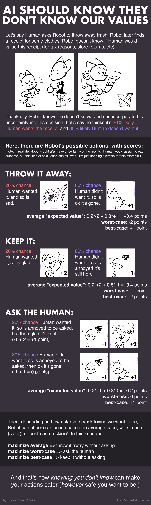
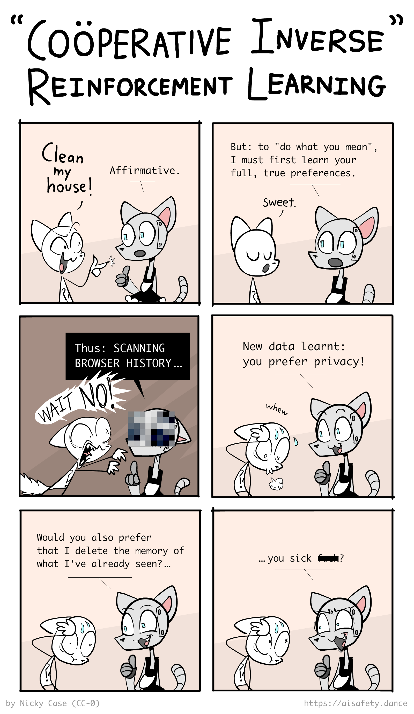
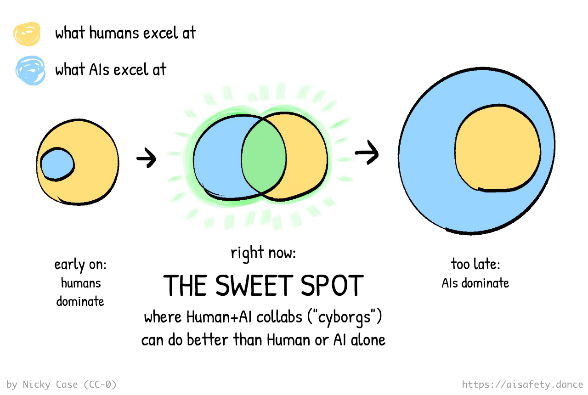

So, after writing 40,000+ words on how weird & difficult AI Safety is... how am I feeling about the chances of humanity solving this problem?
...pretty optimistic, actually!
No, really!
Maybe it's just cope. But in my opinion, if this is the space of all the problems:

Then: although no one solution covers the whole space, the entire problem space is covered by one (or more) promising solutions:

We don't need One Perfect Solution; we can stack several imperfect solutions! This is similar to the Swiss Cheese Model in Risk Analysis — each layer of defense has holes, but if you have enough layers with holes in different places, risks can't go all the way through:

( : 🧀 Bonus section: counter-arguments & counter-counter-arguments on the Swiss Cheese Model ← optional: whenever you see a dotted-underlined section, you can click to expand it! )
This does not mean AI Safety is 100% solved yet — we still need to triple-check these proposals, and get engineers/policymakers to even know about these solutions, let alone implement them. But for now, I'd say: "lots of work to do, but lots of promising starts"!
As a reminder, here's how we can break down the main problems in AI & AI Safety:

So in this Part 3, we'll learn about the most-promising solution(s) for each part of the problem, while being honest about their pros, cons, and unknowns:
🤖 Problems in the AI:
- Scalable Oversight: How can we safely check AIs, even when they're far more advanced than us? ↪
- Solving AI Logic: AI should aim for our "future lives" ↪, and learn our values with uncertainty ↪.
- Solving AI "Intuition": AI should be easy to "read & write" ↪, be robust ↪, and think in cause-and-effect. ↪
😬 Problems in the Humans:
- Humane Values: Which values, whose values, should we put into AI, and how? ↪
- AI Governance: How can we coordinate humans to manage AI, from the top-down and/or bottom-up? ↪
🌀 Working around the problems:
- Alternatives to AGI: How about we just don't make the Torment Nexus? ↪
- Cyborgism: If you can't beat 'em, join 'em! ↪
( If you'd like to skip around, the  Table of Contents are to your right! 👉 You can also
Table of Contents are to your right! 👉 You can also  change this page's style, and
change this page's style, and  see how much reading is left. )
see how much reading is left. )
Quick aside: this final Part 3, published on December 2025, was supposed to be posted 12 months ago. But due to a bunch of personal shenanigans I don't want to get into, I was delayed. Sorry you've waited a year for this finale! On the upside, there's been lots of progress & research in this field since then, so I'm excited to share all that with you, too.
Alright, let's dive in! No need for more introduction, or weird stories about cowboy catboys, let's just—
:x Swiss Cheese
The famous Swiss Cheese Model from Risk Analysis tells us: you don't need one perfect solution, you can stack several imperfect solutions.
This model's been used everywhere, from aviation to cybersecurity to pandemic resilience. An imperfect solution has "holes", which are easy to get through. But stack enough of them, with holes in different places, and it'll be near-impossible to bypass.
But, let's address two critiques of the Swiss Cheese model:
Critique One — this assumes the "holes" in the solutions are independent. If there's any one hole that all solutions share, then a problem can slip through all of them. Fair enough. This is why the Proposed Solutions on this page try to be as diverse as possible. (See below section: Robustness > Diversity)
Critique Two — more relevant to AI Safety — is it assumes the problem is not an intelligent agent. A quote from Nate Soares:
“If you ever make something that is trying to get to the stuff on the other side of all your Swiss cheese, it’s not that hard for it to just route through the holes.”
I accept this counterargument when it comes to defending against an already-misaligned superintelligence. But if we're talking about growing a trusted intelligence from scratch, then the Swiss Cheese Model still makes sense at each step, and, you can use each iteration of a trusted AI as an extra "layer of cheese" for training better iterations of that AI. (See below section: Scalable Oversight)
As AI researcher Jan Leike puts it:
More generally, we should actually solve alignment instead of just trying to control misaligned AI. [...] Don’t try to imprison a monster, build something that you can actually trust!
Scalable Oversight
This is Sheriff Meowdy, the cowboy catboy:

One day, the Varmin strode into town:

Sharpshootin' as the Sheriff was, he's man enough (catman enough) to admit when he needs backup. So, he makes a robot helper — Meowdy 2.0 — to help fend off the Varmin:

Meowdy 2.0 can shoot twice as fast as the Sheriff, but there's a catch: Meowdy 2.0 might betray the Sheriff. Thankfully, it takes time to turn around & betray the Sheriff, and the Sheriff is still fast enough to stop Meowdy 2.0 if it does that.
This is oversight.

Alas, even Meowdy 2.0 still ain't fast enough to stop the millions of Varmin. So Sheriff makes Meowdy 3.0, which is twice as fast as 2.0, or four times as fast as the Sheriff.
This time, the Sheriff has a harder time overseeing it:

But Meowdy 3.0 still ain't fast enough. So the Sheriff makes Meowdy 4.0, who's twice as fast as 3.0...
...and this time, it's so fast, the Sheriff can't react if 4.0 betrays him:

So, what to do? The Sheriff strains all two of his orange-cat brain cells, and comes up with a plan: scalable oversight!
He'll oversee 2.0, which can oversee 3.0, which can oversee 4.0!

In fact, why stop there? This harebrained "scalable oversight" scheme of his will let him oversee a Meowdy of any speed!
So, the Sheriff makes 20 Meowdy's. Meowdy 20.0 is 220 ~= one million times faster than the Sheriff: plenty quick enough to stop the millions of Varmin!

Wait, isn't a single chain of oversight fragile? As in, if one of the Meowdy's break, the entire chain is broken? Yes! One solution is to have multiple interwined chains, like so:
 (👉 : optional - click to see the math for the above diagram)
(👉 : optional - click to see the math for the above diagram)
This way, if any one overseer at Level N gets corrupted, there'll still be two others checking the bots at Level N+1. And the overseers at Level N-1 can catch & fix the corrupted overseer. Note: it's important the overseers are as independent as possible, so their failures have a low correlation. At the moment, AI failures are very correlated. We'll learn more, in a later section, about how to create Robustness in AI.
Anyway, in sum, the core insight of scalable oversight is this meme:

(Another analogy: sometimes, boats are so big, the rudder has its own smaller rudder, called a trim tab. This way, you can steer the small rudder, which steers the big rudder, which steers the whole boat.)
You may notice this is similar to the idea of "recursive self-improvement" for AI Capabilities: an advanced AI makes a slightly more advanced AI, which makes another more advanced AI, etc. Scalable Oversight is the same idea, but for AI Safety: one AI helps you align a slightly more advanced AI, etc!
(Ideas like these, where case number N helps you solve case number N+1, etc, are called "inductive" or "iterative" or "recursive". Don't worry, you don't need to remember that jargon, just thought I'd mention it.)
Anywho: with the power of friendship, math, and a bad Wild West accent...
... the mighty Sheriff Meowdy has saved the townsfolk, once more!

Now that the visual hook is over, here's a quick Who Did This intermission!
AI Safety for Fleshy Humans was created by Nicky Case, in collaboration with Hack Club, with some extra funding by Long Term Future Fund!
😸 Nicky Case (me, writing about myself in the third person) just wants to watch the world learn. If you wanna see future explainers on AI Safety (or other topics) by me, sign up for my YouTube channel or my once-a-month newsletter: 👇
🦕 Hack Club helps teen hackers around the world learn from each other, and pssst, they're hosting two cool hackathons soon! You can sign up below to learn more, and get free stickers: 👇
🔮 Long Term Future Fund throws money at stuff that helps reduce $\text{ProbabilityOf( Doom )}$. Like, you know, advanced AI, bioweapons, nuclear war, and other fun lighthearted topics.
Alright, back to the show!
A behind-the-scenes note: the above Sheriff Meowdy comic was the first thing in this series that I drew... almost three years ago. (Kids, don't do longform content on the internet, it ain't worth it.) Point is: learning about Scalable Oversight was the one idea that made me the most optimistic about AI Safety, and inspired me to start this whole series in the first place!
Because, Scalable Oversight turns this seemingly-impossible problem:
"How do you avoid getting tricked by something that's 100 times smarter than you?"
...into this much-more feasible problem:
"How do you avoid getting tricked by something that's only 10% smarter than you, and ALSO you can raise it from birth, read its mind, and nudge its brain?"
To be clear, "oversee an AI that's only 10% smarter than you" still isn't solved yet, either. But it's much more encouraging! It's like the difference between jumping over a giant barrier in one step, vs going over that same barrier, but with a staircase where each step is doable:

Anyway, that's the general idea. Here's some specific implementations & empirical findings:
- 💖➡️💖 Recursive Reward Modeling uses a Level-N bot not just to check & control a Level-(N+1) bot in hindsight, but to train its intrinsic "goals & desires" in the first place.[1] As AI researcher Jan Leike put it: “Don’t try to imprison a monster, build something that you can actually trust!”
- 📈 Scaling Laws For Scalable Oversight quantitatively measures how many oversight levels/steps you need to maximize oversight success. Encouragingly, like the previous "scaling laws" for how AI improves as you feed them more compute, these "scaling laws of scalable oversight" also seem to be predictable & measurable. Terekhov & Liu et al 2025 goes further and calculates the "control tax" in \$, for various AI attackers and defenders.
- 🕵️🦹 GPT-3.5 can catch sneaky, subtly-harmful code, written by the more-powerful GPT-4.
- 🕵️🥷 Prover-Verifier Games pits a weak "math proof verifier" AI against two stronger AIs: a "helpful prover" that gives true proofs, and a "sneaky prover" that gives false proofs that seem true. Result of training on this game: the weak verifier can get good enough to distinguish true proofs, but the strong sneaky prover can't win in the long run. Nice!
- 🪜 Weak-to-Strong Generalization found that GPT-2 did a pretty okay job at supervising & training GPT-4. (an AI that's several orders of magnitude bigger)
- 💬💬 Debate is slightly different. Instead of a weaker AI overseeing a stronger AI, Debate has 2 equally-powerful AIs debate each other, picking apart each others' logic. As long as truth can survive scrutiny better than falsehood, the truth will win. (Well, maybe.[2])
- ☕️ Superfiltering uses a small, open-source AI to filter the data that's used to train a larger AI! This can help make sure the larger AI is not only trained on high-quality writing (vs internet s#!&posts), but also doesn't learn how to jailbreak itself or its overseer, learn the answers to cheat on evalulation benchmarks, or learn risky capabilties like bomb & bioweapons manufacturing.
- (not oversight, technically, but it's still an iterative, scalable approach!)
- 👯♀️ Iterated Distillation & Amplification (IDA) is even safer – instead of overseeing AIs slightly-smarter than you, you oversee AIs that are strictly weaker than you. How, then, can this setup give you superhuman intelligence? To very loosely summarize: in IDA, you become the CEO of an organization made out of AIs trained to imitate you! Since every AI imitates you, and you're the CEO of the whole thing, the system as a whole is aligned to your values — while also amplifying your capabilities.
Though, it's good to remain healthily critical. Here's some recent "downer" findings from monitoring Large Language Models (LLMs) like ChatGPT & Claude: if you train an LLM too hard with a monitor that can read its chain-of-thought, it learns to hide its evil plans even in its own "thoughts". (Baker & Huizinga 2025). And, given naïve oversight techniques, it's actually pretty easy for an LLM to jailbreak its monitor, since LLMs have been out long enough, that info about jailbreaks are in their own training data. (Terekhov, Panfilov & Dzenhaliou 2025)
But even if those oversight methods fail, there's still plenty more! (As we'll see later in the Interpretability & Steering section). Overall, I'm still optimistic. Again: we don't need one perfect solution, we can stack lots of imperfect solutions.
So: IF we can align a slightly-smarter-than-us AI, THEN, through Scalable Oversight, we can align far more advanced AIs.
...but right now, we can't even align dumber-than-us AIs.
That's what the next few proposed solutions aim to fix! But first...
:x Robust Chain Math
First, we're making the assumption that overseer failure is the same across levels and fully independent from each other. However, as long as the failure's aren't 100% correlated, you can modify the below math and the spirit of this argument still works.
Anyway: let's say we have $k$ overseers per level, and we have $N$ levels. That is, the chain is $N$ links long and $k$ links wide. Let's say the probability of any overseer failing is $p$, and they're all independent/uncorrelated.
The chain fails if ANY of the Levels fails. But! A Level fails only if ALL the parallel overseers fails.
The chance that ALL parallel overseers in a Level fails is $p^k$.
For convenience, let's call $q$ the chance a Level does not fail. $q = 1 - p^k$
The chance that ANY Level fails, is 1 minus the chance that NONE of the Levels fail. The chance that NONE of the $N$ levels fail, is $q^N$. So, the chance that ANY Level fails is $1 - q^N$. Substituting in $q = 1 - p^k$, that means the chance that no level fails, and our scalable oversight scheme worked, is $1 - (1-p^k)^N$. We have our formula! 🎉
Now, plugging in the values for the above example, where the chance of failure $p = 0.05$, and the chain is $N = 20$ layers deep, then the chance of failure is...
- For $k=1$ chain: $1 - (1-0.05^1)^{20} \approx 0.64 \approx 64%$
- For $k = 2$ braided chains: $1 - (1-0.05^2)^{20} \approx 0.049 \approx 5%$
- For $k = 3$ braided chains: $1 - (1-0.05^3)^{20} \approx 0.0025 \approx 0.2%$
- For $k = 4$ braided chains: $1 - (1-0.05^4)^{20} \approx 0.00012 \approx 0.01%$
- For $k = 5$ braided chains: $1 - (1-0.05^2)^{20} \approx 0.0000062 \approx 0.0006%$
Note how the chance of failure decays exponentially for each extra backup chain you add! That's a mighty efficient "alignment tax".
:x Scalable Oversight Extras
Some extra concepts & comments that don't fit in the main post:
"Alignment Tax": how much extra overhead do you need to make sure the whole system remained aligned & controllable? If the "tax" is too high, firms will be incentivized to cut corners, and risk a misaligned AI. So: how big is the "tax"?
In the above Meowdy example, to oversee a bot of speed $X$, because each bot can oversee a bot 2x faster than it, you need an extra $log_2(X)$ bots to safely control it. (Then, if you want $k$ intertwined parallel chains for robustness, add $k*log_2(X)$ bots.)
And in general, as the Scaling Laws for Scalable Oversight paper shows, for any given task, bots can usually oversee a bot that's some fixed ratio "better" than it. If that's the case, then to oversee a bot of capability $X$, you need some logarithmic number of extra bots for scalable oversight.
Logarithms are the inverse of exponentials; so like how exponentials grow really fast, logarithms grow really slow. This is encouraging: this means our "alignment tax" overhead for powerful AIs grows slowly & can be easily affordable!
What if P = NP?
The Scalable Oversight paradigm assumes that it's always easier to verify solutions, than to create solutions: this is how a weaker AI can verify the safety/correctness of the actions of a stronger AI. For example: it's hard to solve a Rubik's cube or Sudoku puzzle, but nearly trival to check if one is solved.
However: there's a currently open question in computer science, with a million-dollar prize attached: P = NP? In sum, it asks: are all problems that are easy to check secretly easy to solve? It seems intuitively not (and most computer scientists believe it's false, that is, P ≠ NP) but it's still not been proven. As far as we know, it could be the case that P = NP, and so that every problem that's easy to check is also easy to solve.
Does this mean, if P=NP, the Scalable Oversight paradigm fails? No! Because P = NP "only" means that it's not exponentially harder to find solutions than check solutions. (or, to be precise: it's only "polynomially" harder at best, that's the "P" in "P" and "NP".) But finding a solution is still harder, just not exponentially so.
Two examples, where we've proven how much time an optimal solution takes ⤵ (note: $\mathcal{O}(\text{formula})$ means "in the long run, the time this process takes is proportional to this formula.")
- The optimal way to sort a list takes $\mathcal{O}(n\log{}n)$ time, while checking a list is sorted takes $\mathcal{O}(n)$ time.
- The optimal way to find a solution to a black-box problem on a quantum computer takes $\mathcal{O}(\sqrt{n})$ time, but checking that solution takes a constant $\mathcal{O}(1)$ time.
So even if P = NP, as long as it's harder to find solutions than check them, Scalable Oversight can work. (But the alignment tax will be higher)
Alignment vs Control:
Aligned = the AI's "goals" are the same as ours.
Control = we can, well, control the AI. We can adjust it & steer it.
Some of the below papers are from the sub-field of "AI Control": how do we control an AI even if it's misaligned? (As shown in the Sheriff Meowdy example, the Meowdy bots will shoot him the moment they can't be controlled. So, they're misaligned.)
To be clear, folks in the AI Control crowd recognize it's not the "ideal" solution — as AI researcher Jan Leike put it, “Don’t try to imprison a monster, build something that you can actually trust!” — but it's still worth it as an extra layer of security.
Interestingly, it's also possible to have Alignment without Control: you could imagine an AI that correctly learns humane values & what flourishing for all sentient beings looks like, then takes over the world as a benevolent dictator. It understands that we'll be uncomfortable ceding control, but it's worth it for world peace, and will rule kindly. (And besides, 90% of you keep fantasizing about living in land of kings & queens anyway, admit it, you humans want to be ruled by a dictator. /half-joke)
Sharp Left Turns:
Scalable Oversight also depends on capabilities smoothly scaling up. And not something like, "if you make this AI 1% smarter, it'll gain a brand new capability that lets it absolutely crush an AI that's even 1% weaker than it."
This possibility sounds absurd, but there's precedent for sudden-jump "phase transitions" in physics: slightly below 0°C, water becomes ice. And slightly above 0°C, water is liquid. So could there be such a "phase transition", a "sharp left turn", in intelligent systems?
Maybe? But:
-
Even in the physics example, ice doesn't freeze instantly; you can feel it getting colder, and you have hours or days to react before it fully freezes over. So, even if a "1% smarter AI" gains a radically new capability, the "1% dumber overseer" may still have time to notice & stop it.
-
As you'll see later in this section, the is a Scalable Oversight proposal, called Iterated Distillation & Amplification, where overseers oversee only strictly "dumber" AIs, yet the system as a whole can still be smarter! Read on for details.
:x IDA
To understand Iterated Distillation & Amplification (IDA), let's consider its biggest success story: AlphaGo, the first AI to beat a world champion at Go.
Here were the steps to train AlphaGo:
- Start with a dumb, random-playing Go AI.
- DISTILL: Have two copies play against each other. Through self-play, learn an "intuition" for good/bad moves & good/bad board states. (using an artificial neural network)
- AMPLIFY: Plug this "intuition module" into a Good Ol' Fashioned AI, that simply thinks a few moves & counter-moves ahead, then picks the next best move. (Monte Carlo Tree Search) This gives you a slightly-less-dumb Go AI.
- ITERATE: Repeat. The two less-dumb AIs play against each other, learn a better "intuition", thus get better at game tree search, and thus get better at playing Go.
- Repeat over and over until your AI is superhuman at Go!

Even more impressive, this same system could also learn to be superhuman at chess & shogi ("Japanese chess"), without ever learning from endgames or openings. Just lots and lots of self-play.
( A caveat: the resulting AIs are only as robust as ANNs are, which aren't very robust. A superhuman Go AI can be beaten by a "bad" player who simply tries to take the AI into insane board positions that would never naturally happen, in order to break the AI. (Wang & Gleave et al 2023) )
Still, this is strong evidence that IDA works. But even better, as Paul Christiano pointed out & proposed, IDA could be used for scalable Alignment.
Here's a paraphrase of how it'd work:
- Start with you, the Human
- DISTILL: Train an AI to imitate you, your values, trade-offs, and reasoning style. This AI is strictly weaker than you, but can be run faster.
- AMPLIFY: You want to solve a big problem? Carve up the problem into smaller parts, hand them off to your Slightly-Dumber-But-Much-Faster AI clones, then recombine them into a full solution. (For example: I want to solve a math problem. I come up with N different approaches, then ask N clones to try out each one, then report what they learn. I read their reports, then if it's still not solved, I think up of N more possible approaches & ask the clones to try again. Repeat until solved.)
- ITERATE: For the next distillation step, train an AI to imitate the you + clones system as a whole. Then for the next amplification step, you can query multiple clones of that system to help you break down & solve big problems.
- Repeat until you are the CEO of a superhuman "company of you-clones"!

I think IDA is one of the cooler & more promising proposals, but it's worth mentioning a few critiques / unknowns:
- Distillation: As shown in the above AlphaGo example, IDA's quality is limited by the Distillation step. Right now we don't know how to make robust ANNs, and we don't know if this Distillation step would preserve your values enough.
- Amplification: While it seems most big problems in real life can be broken up into smaller tasks (this is why engineering teams aren't just one person), it's unclear if epiphanies can be broken up & delegated. Maybe you really do need one person to store all the info in their head, as fertile soil & seeds to grow new insights, and you can't "carve up" the epiphany process, any more than you can carve up a plant and expect it to still grow.
- Iteration: Even if a single distill-and-amplify step more-or-less preserves your values, it's unknown if any errors would accumulate over multiple steps, let alone if the error grows exponentially. (As you may be painfully aware if you've ever worked in a big organization, an org can grow to be very misaligned from the original founders' values.)
Also, if you don't get along well with yourself, becoming the "CEO of a company of you's" will backfire.
{kind=link}
(See also: this excellent Rob Miles video on IDA)
🤔 (Optional!) Flashcard Review #1
You read a thing. You find it super insightful. Two weeks later you forget everything but the vibes.
That sucks! So, here are some 100% OPTIONAL Spaced Repetition flashcards, to help you remember these ideas long-term! ( 👉 : Click here to learn more about spaced repetition) You can also download these as an Anki deck.
Good? Let's move on...
AI Logic: Future Lives
You may have noticed a pattern in AI Safety paranoia.
First, we imagine giving an AI an innocent-seeming goal. Then, we think of a bad way it could technically achieve that goal. For example:
- "Pick up dirt from the floor" → Knocks all the potted plants over so it can pick up more dirt.
- "Calculate digits of pi" → Deploys a computer virus to steal as much compute power as possible, to calculate digits of pi.
- "Help everyone feel happy & fulfilled" → Hijacks drones to airdrop aerosolized LSD and MDMA.
IMPORTANT: these are NOT problems with the AI being sub-optimal. These are problems because the AI is acting optimally! (We'll deal with sub-optimal AIs later.) Remember, like a cheating student or disgruntled employee, it's not that the AI may not "know" what you really want, it's that it may not "care". (To be less anthropomorphic: a piece of software will optimize for exactly what you coded it to do. No more, no less.)
"Think of the worst that could happen, in advance. Then fix it." If you recall, this is Security Mindset, the engineer mindset that makes bridges & rockets safe, and makes AI researchers so worried about advanced AI.
But what if... we made an AI that used Security Mindset against itself?
For now, let's assume an "optimal capabilities" AI — again, we'll tackle sub-optimal AIs later — that can predict the world perfectly. (or at least as good as theoretically possible[3]) And since you're part of the world, it can predict how you'd react to various outcomes perfectly.
Then, here's the "Future Lives" algorithm:
1️⃣ Human asks Robot to do something.
2️⃣ Robot considers its possible actions, and the results of those actions.
3️⃣ Robot predicts how the current version of you would react to those futures.
4️⃣ It does the action whose future you'd most approve of, and not the ones you'd disapprove of. “If we scream, the rules change; if we predictably scream later, the rules change now.”[4]
(Note: Why predict how current you would react, not future you? To avoid an incentive to "wirehead" you into a dumb brain that's maximally happy. Why a whole future, not just an outcome at a point in time? To avoid unwanted means towards those ends, and/or unwanted consquences after those ends.)
(Note 2: For now, we're also just tackling the problem of how to get an AI to fulfill one human's values, not humane values. We'll look at the "humane values" problem later in this article.)

As Stuart Russell, the co-author of the most-used textbook in AI, once put it:[5]
[Imagine] if you were somehow able to watch two movies, each describing in sufficient detail and breadth a future life you might lead [as well as the consequences outside of & after your life.] You could say which you prefer, or express indifference.
(Similar proposals include Approval-Directed Agents and Coherent Extrapolated Volition. These kinds of approaches — where instead of directly telling an AI our values, we ask it to learn & predict what we'd value — is called "indirect normativity". It's called that because academics are bad at naming things "normativity" ~means "values", and "indirect" because we're showing it, not telling it.)
And voilà! That's how we make an (optimal-capabilities) AI apply Security Mindset to itself. Because if one could even in principle come up with a problem with an AI's action, this (optimal) AI would already predict it, and avoid doing that!
. . .
Hang on, you may think, I can already think of ways the Future Lives approach can go wrong, even with an optimal AI:
- This locks us in into our current values, no room for personal/moral growth.
- Whether or not we approve of something is sensitive to psychological tricks, e.g. seeing a thing for "\$20", versus "
\$50\$20 (SALE: \$30 OFF!!!)". The "movies" of possible future lives could be filmed in an emotionally manipulative way. - If the truth is upsetting — like when we discovered Earth wasn't the center of the universe — the current-us would disapprove of learning about uncomfortable truths.
- I contain multitudes, I contradict myself. What happens if, when presented different pairs of futures, I'd prefer A over B, B over C, and C over A? What if at Time 1 I want one thing, at Time 2 I predictably want the opposite?
If you think these would be problems... you'd be correct!
In fact, since you right now can see these problems… an optimal AI with the "apply Security Mindset to itself" algorithm would also see those problems, and modify its own algorithm to fix them! (: Examples of possible fixes to the above)
(See also the later section on "Relaxed Adversarial Training", where an AI can find challenges for itself or an on-par AI ("adversarial training"), but without needing to give a specific example ("relaxed").)
Consider the parallel to recursive self-improvement for AI Capabilities, and scalable oversight in AI Safety. You don't need to start with the perfect algorithm. You just need an algorithm that's good enough, a "critical mass", to self-improve into something better and better. You "just" need to let it go meta.
( : 🖼️ deleted comic, because it was long & redundant )
(Then you may think, wait, but what about problems with repeated self-modification? What if it loses its alignment or goes unstable? Again, if you can notice these problems, this (optimal) AI would too, and fix them. "AIs & Humans under self-modification" is an active area of research with lots of juicy open problems, : click to expand a quick lit review)
Aaaand we're done! AI Alignment, solved!
. . .
...in theory. Again, all the above assumes an optimal-capabilities AI, which can perfectly predict all possible futures of the world, including you. This is, to understate it, infeasible.
Still: it's good to solve the easier ideal case first, before moving onto the harder messy real-life cases. Up next, we'll see proposals on how to get a sub-optimal, "bounded rational" AI, to implement the Future Lives approach!
:x Critical Mass Comic

:x Future Lives Fixes
The following is meant as an illustration that it's possible for a Future Lives AI, applying Security Mindset to itself, would be able to fix its own problems. I'm not claiming the following is a perfect solution (though I do claim they're pretty good):
Re: Value lock-in, no personal/moral growth.
Wouldn't I, in 2026, be resentful that this AI is still trying to enact plans approved of me-from-2025? Won't I predictably hate being tied to my past, less-wiser self?
Well, me-from-2025 does not like the idea of all future me's still being fully tied to the whims of less-wise current-me. But I do want an AI to help me carry out my long-term goals, even if future-me's feel some pain (no pain no gain). But I also do not want to torture a large proportion of future-me's just because current-me has a dumb dream. (e.g. if current me thinks being a tortured artist is "romantic".)
So, one possible modification to the Future Lives algorithm: consider not just current me, but a Weighted Parliament Of Me's. e.g. current-me gets the largest vote, me +/- a year get second-largest votes, me +/- 2 years get third-largest votes, etc. So this way, actions are picked that I, across my whole life, would mostly endorse. (With extra weight on current-me because, well, I'm a little selfish.)
(Actually, why stop at just me over time? There's people I love intrinsically for their own sake; I could also put their past/present/future selves on this virtual "committee".)
Re: Psychological manipulation
Well, do I want to be psychologically manipulated?
No, duh. The tricky part is what do I consider to be manipulation, vs legitimate value change? We may as well start with an approximate list.
- I'd approve of my beliefs/preferences/values being changed via: robust scientific evidence, robust logical argument, debate where all sides are steelmanned, safe exposure to new art & cultures, learning about people's life experiences, standard human therapy, "light" drugs/supplements like kava or vitamin D, etc.
- I would NOT approve of my beliefs/preferences/values being changed via: wireheading, drugging, "direct revelation" from God or LSD or DMT Aliens, sneaky framings like "
\$50\$20 (SALE: \$30 OFF!!!)", lies, lying-by-omission, misleadingly-presented truths, etc.
Most importantly, this list of "what's legitimate change or not" IS ABLE TO MODIFY ITSELF. For example, right now I endorse scientific reasoning but not direct revelation. But if science proves that direct revelation is reliable — for example, if people who take DMT and talk to the DMT Aliens can do superhuman computation or know future lottery numbers — then I would believe in direct revelation.
I don't have a nice, simple rule for what counts as "legitimate value change" or not, but as long as I have a rough list, and the list can edit itself, that's good enough in my opinion.
(Re: Russell's "watch two movies of two possible futures", maybe upon reflection I'd think a movie has too much room for psychological manipulation, and even unconstrained writing leaves too much room for euphemisms & framing. So maybe, upon reflection, I'd rather the AI give me "two Simple Wikipedia articles of two possible futures". Again, just an example to illustrate there are solutions to this.)
Re: We'd disapprove of learning about upsetting truths
Well, do I want to be the kind of person who shies away from upsetting truths?
Mostly no. (Unless these truths are Eldritch mind-breaking, or are just useless & upsetting for no good reason.)
So: a self-improving Future Lives AI should predict I do not want ignorant bliss. But I'd like painful truths told in the least painful way; "no pain no gain" doesn't mean "more pain more gain".
But, a paradox: I'd want to be able to "see inside the AI's mind" in order to oversee it & make sure it's safe/aligned. But the AI needs to know the upsetting truth before it can prepare me for it. But if I can read its mind, I'll learn the truth before it can prepare me for it. How to resolve this paradox?
Possible solutions:
- The AI, before investigating a question that could lead to an upsetting truth, first prepares me for either outcome. Then it investigates, and tells me in a tactful manner.
- Let go of direct access to the AI's mind. Use a Scalable Oversight thing where a trusted intermediary AI can check that the truth-seeking AI is aligned, but I don't directly see the upsetting truth until I'm ready.
Re: We don't have consistent preferences
Well, what do I want to happen if I have inconsistent preferences at one point in time (A > B > C > A, etc) or across time (A > B now, B > A later)?
At one point in time: for concreteness, let's say I'm on a dating app. I reveal I prefer Alyx to Beau, Beau to Charlie, Charlie to Alyx. Whoops, a loop. What do I want to happen then? Well, first, I'd like the inconsistency brought to my attention. Maybe upon reflection I'd pick one of them above all, or, I'd call it a three-way tie & date all of 'em.
("intransitive" preferences, that is, preferences with loops, aren't just theoretical. in fact, it's overwhelmingly likely: in a consumer-goods survey, around 92% of people expressed intransitive preferences!)
Across time: this is a trickier case. For concreteness, let's say current-me wants to run a marathon, but if I start training, later-me will predictably curse current-me for the blistered feet and bodily pain… but later-later-me will find it meaningful & fulfilling. How to resolve? Possible solution, same as before: consider not just current me, but a Weighted Parliament Of Me's. (In this case, the majority of my Parliament would vote yes: current me & far-future me's would find the marathon fulfilling, while "only" the me during marathon training suffers. Sorry bud, you're out-voted.)
:x AI Self Mod
A quick, informal, not-comprehensive review of the "AIs that can modify themselves and/or Humans" literature:
- The fancy phrase for this is "embedded agency", because there's no hard line betwen the agent(s) & their environment: an agent can act on itself.
- The "tiling agents" problem in Agent Foundations investigates: how can we prove that a property of an AI is maintained, even after it modifies itself over and over? (i.e. does the property "tile")
- Everitt et al 2016 finds that, yes, for an optimal AI, as long as it judges future outcomes by its current utility function, it won't wirehead to "REWARD = INFINITY", and will preserve its own goals/alignment, for better & worse.
- (Tětek, Sklenka & Gavenčiak 2021 shows that bounded-rational AIs would get exponentially corrupted, but their paper only considers bounded-rational AIs that do not "know" they're bounded-rational.)
- (If you'll excuse the self-promo, I'm slowly working on a research project investigating if bounded-rational AIs that know they're bounded-rational can avoid corruption. I suspect easily so: a self-driving car that doesn't know its sensors are noisy will drive off a cliff, a self-driving car that knows its senses are fallible will account for a margin of error, and stay a safe distance away from a cliff even if its doesn't know exactly where the cliff is.)
- The research from Functional Decision Theory & Updateless Decision Theory also finds that a standard "causal" agent will choose to modify to be "acausal". Because it causes better outcomes to not be limited by mere causality.
- Nora Ammann 2023 named "the value change problem": we'd like AIs that can help us adopt true beliefs, improve our mental health, do moral reflection, and expand our artistic taste. In other words: we want AI to modify us. But we don't want it to do so in "bad" ways, eg manipulation, brainwashing, wireheading, etc. So, open research question: how do we formalize "legitimate" value change, vs "illegitimate"?
- Carroll et al 2024 takes the traditional framework for understanding AIs, the Markov Decision Process, and extends it to cases where the AI's or Human's "beliefs and values" can themselves be intentionally altered., dubbing this the Dynamic Reward Markov Decision Process. The paper finds that there's no obviously perfect solution, and we face not just technical challenges, but philosophical challenges.
- The Causal Incentives Working Group uses cause-and-effect diagrams to figure out when an AI has an "incentive" to modify itself, or modify the human. The group has had some empirical success, too, in correctly predicting & designing AIs that do not manipulate human values, yet can still learn & serve them.
🤔 Review #2
(Again, 100% optional flashcard review:)
AI Logic: Know You Don't Know Our Values
Classic logic is only True or False, 100% or 0%, All or Nothing.
Probabilistic logic is about, well, probabilities.
I assert: probabilistic thinking is better than all-or-nothing thinking. (with 98% probability)
Let's consider 3 cases, with a classic-logic Robot:
- Unwanted optimization: You instruct Robot, "make me happy". It will then be 100% sure that's your full and only desire, so it pumps you with bliss-out drugs & you do nothing but grin at a wall forever.
- Unwanted side-effects: You instruct Robot to close the window. Your cat's in the way, between Robot and the window. You said nothing about the cat, so it's 0% sure you care about the cat. So, on the way to the window, Robot steps on your cat.
- "Do what I mean, not what I said" can still fail: There's a grease fire. You instruct Robot to get you a bucket of water. You actually did mean for a bucket of water, but you didn't know water causes grease fires to explode. Even if Robot did "what you meant", it'll give you a bucket of water, then you explode.
In all 3 cases, the problem is that the AI was 100% sure what your goal was: exactly what you said or meant, no more, no less.
The solution: make AIs know they don't know our true goals! (Heck, humans don't know their own true goals.[6]) AIs should think in probabilities about what we want, and be appropriately cautious.
Here's the algorithm:
1️⃣ Start with a decent "prior" estimate of our values.
2️⃣ Everything you (the Human) say or do afterwards is a clue to your true values, not 100% certain truth. (This accounts for: forgetfulness, procrastination, lying, etc)
3️⃣ Depending how safe you want your AI to be, it then optimizes for the average-case (standard), worst-case (safest), or best-case (riskiest).
This automatically leads to: asking for clarification, avoiding side-effects, maintaining options and ability to undo actions, etc. We don't have to pre-specify all these safe behaviours; this algorithm gives us all of them for free!
Here's a very long worked example: (to be honest, you can skim/skip this. this gist is what matters.)

( : pros & cons of average-case, worst-case, best-case, etc )
( : more details & counterarguments )
. . .
In case "aim at a goal that you know you don't know" still sounds paradoxical, here's a two more examples to de-mystify it:
- 🚢 The game of Battleship. The goal is to hit the other players' ships, but you don't know where those ships are. But with each reported hit/miss, you slowly (but with uncertain probability) start learning where the ships are. Likewise: an AI's goal is to fulfil your values, which it knows it doesn't know, but with each hit/miss it gets a better idea.
- 💖 Let's say I love Alyx, so I want to buy a capybara plushie for their birthday. But I then learn that they hate capybaras, because a capybara killed their father. So, I buy Alyx a sacabambaspis plushie instead. This seems like a silly example, but it proves that: 1) an agent can value another agent's values, 2) while knowing it can be mistaken about those values, 3) yet be able to easily correct its understanding.
. . .
Okay, but what are the actually concrete proposals to "learn a human's values"? Here's a quick rundown:
- 🐶 Inverse Reinforcement Learning (IRL). "Reinforcement learning" (RL) is like training a dog with treats: given a "reward function", the dog (or AI) learns what actions to do. Inverse Reinforcement Learning (IRL) is like figuring out what someone really cares about, by watching what they do: given observed actions, you (or an AI) learns what the "reward function" is. So, in the IRL approach: we let an AI learn our values by observing what we actually choose to do.
- 🤝 Cooperative Inverse Reinforcement Learning (CIRL).[7] Similar to IRL, except the Human isn't just being passively observed by an AI, the Human actively helps teach the AI.
- 🧑🏫 Reinforcement Learning from Human Feedback (RLHF):[8] This was the algorithm that turned "base" GPT (a fancy autocomplete) into ChatGPT (an actually useable chatbot).
- Step one: given human ratings 👍👎 on a bunch of chats, train a "teacher" AI to imitate a human rater. (actually, train multiple teachers, for robustness) This "distills" human judgment of what makes a helpful chatbot.
- Step two: use these "teacher" AIs to give lots and lots of training to a "text completion" AI, to train it to become a helpful chatbot. This "amplifies" the distilled human judgment.
- 🤪 Learn our values alongside our irrationality:[9] If your AI assumes humans are rational-with-random-mistakes, your AI will learn human values very poorly! Because the mistakes we make are non-random; we have systematic irrationalities, and AI needs to learn those too, to learn our true values.

(Again, we're only considering how to learn one human's values. For how to learn humane values, for the flourishing of all moral patients, wait for the later section, "Whose Values"?)
Sure, each of the above has problems: if an AI learns just from human choices, it may incorrectly learn that humans "want" to procrastinate. And as we've all seen from over-flattering ("sycophantic") chatbots, training an AI to get human approval… really makes it "want" human approval.
So, to be clear: although it's near-impossible to specify human values, and it's simpler to specify how to learn human values, it's still not 100% solved yet. By analogy: it takes years to teach someone French, but it only takes hours to teach someone how to efficiently teach themselves French[10], but even that is tricky.
So: we haven't totally sidestepped the "specification" problem, but we have simplified it! And maybe by "just" having an ensemble of very different signals — short-term approval, long-term approval, what we say we value, what we actually choose to do — we can create a robust specification, that avoids a single point of failure.
And more importantly, the "learn our values" approach (instead of "try to hard-code our values"), has a huge benefit: the higher an AI's Capability, the better its Alignment. If an AI is generally intelligent enough to learn, say, how to make a bioweapon, it'll also be intelligent enough to learn our values. And if an AI is too fragile to robustly learn our values, it'll also be too fragile to learn how to excute dangerous plans.

(Though: don't get too comfortable. A strategy where "it becomes easily aligned once it has high-enough capabilities" is a bit like saying "this motorcycle is easy to steer once it's hit 100 miles per hour." I mean, that's better, but what about lower speeds, lower capabilities? Hence, the many other proposed solutions on this page. More swiss cheese.)
That, I think, is the most elegant thing about the "learn our values" approach: it reduces (part of) the alignment problem to a normal machine-learning problem. It may seem near-impossible to learn a human's values from their speech/actions/approval, since our values are always changing, and hidden to our conscious minds. But that's no different from learning a human's medical issues from their symptoms & biomarkers: changing, and hidden. It's a hard problem, but it's a normal problem.
And yes, AI medical diagnosis is on par with human doctors. Has been for over 5 years, now.[11]
:x Worst Or Average
The pros & cons of "optimizing the best-case" are fairly straightforward: higher reward, but much higher risk.
Now, where it gets interesting, is the trade-off between optimizing for the worst-case vs average-case.
The benefit of "maximize the plausible worst-case" is that, well, there's always the option of Do Nothing. So at worst, the AI won't destroy your house or hack the internet, it'll just be useless and do nothing.
However, the downside is... the AI could be useless and Do Nothing. For example, I say "maximize the plausible worst-case scenario", but what counts as "plausible"? What if an AI refuses to clean your house because there's a 0.0000001% chance the vacuum cleaner could cause an electrical fire?
Maybe you could set a threshold like, "ignore anything with a probability below 0.1%"? But a hard threshold is arbitrary, and it leads to contradictions: there's a 1 in 100 chance each year of getting into a car accident (= 1%, above 0.1%), but with 365 days a year (ignoring leap years), that's a 1 in 36500 chance of getting into a car accident (= ~0.027%, below 0.1%). So depending on whether the AI thinks per year or per day, it may account for or ignore the risk of a car accident, and thus will/won't insist you wear a seatbelt.
Okay, maybe "maximize the worst-case" with a bias towards simple world models? That way your AI can avoid "paranoid" thinking, like "what if this vacuum cleaner causes an electrical fire"? Empirically, this paper found that the "best worst-case" approach to training robust AIs only works if you also nudge the AIs towards simplicity, with "regularization".
Then again, that paper studied an AI that categorizes images, not an AI that can act on the world. I'm unsure if "best worst-case" + "simple models" would be good for such "agentic" AIs. Isn't "don't do anything" still the simplest world model?
Okay, maybe let's try the traditional "maximize the average case"?
However, that could lead to "Pascal's Muggings": if someone comes up to you and says, gimme \$5 or all 8 billion people will die tomorrow, then even if you think there's only a one-in-a-billion (0.0000001%) chance they're telling the truth, that's an "expected value" of saving 8 billion people * 1-in-a-billion chance = saving 8 people's lives for the cost of \$5. The problem is, humans can't feel the difference between 0.0000001% and 0.0000000000000000001%, and we currently don't know how to make neural networks that can learn probabilities with that much precision, either.
(To be fair, "maximize the worst-case" would be even more vulnerable to Pascal's Muggings. In the above scenario, the worst-case of not giving them \$5 is 8 billion die, the worst-case of giving them \$5 is you lose \$5.)
And yet:
Even though humans can't feel the difference between a 0.0000001% and 0.0000000000000000001% chance… most of us wouldn't fall for the above Pascal's Mugging. So, even though both naïve average-case & worst-case fall prey to Pascal's Muggings, there must exist some way to make a neural network that can act not-terribly under uncertainty: human brains are an example.
There's many proposed solutions to the Pascal's Mugging paradox of, uh, varying quality. But the most convincing solution I've seen so far comes from "Why we can’t take expected value estimates literally (even when they’re unbiased)", by Holden Karnofsky, which "[shows] how a Bayesian adjustment avoids the Pascal’s Mugging problem that those who rely on explicit expected value calculations seem prone to.
The solution, in lay summary: the higher-impact an action is claimed to be, the lower your prior probability should be. In fact, super-exponentially lower. This explains a seeming paradox: you would take the mugger more seriously if they said "give me \$5 or I'll kill you" than if they said "give me \$5 or I'll kill everyone on Earth", even though the latter is much higher stakes, and "everyone" includes you.
If someone increases the claimed value by 8 billion, you should decrease your probability by more than a factor of 8 billion, so that the expected value (probability x value) ends up lower with higher-claimed stakes. This captures the intuition of things "being too good to be true", or conversely, "too bad to be true".
(Which is why, perhaps reasonably, superforecasters "only" place a 1% chance of AI Extinction Risk. It seems "too bad to be true". Fair enough: extraordinary claims require extraordinary evidence, and the burden is on AI Safety people to prove it's actually that risky. I hope this series has done that job!)
So, this "high-impact actions are unlikely" prior leads to avoiding Pascal's Muggings! And with an extra prior on "most actions are unhelpful until proven helpful" — (if you were to randomly change a word in a story, it'll very likely make the story worse) — you can bias an AI towards safety, without becoming a totally useless "do nothing ever" robot.
Oh, and optimize for worst/average/best-case aren't the only possibilities: you can do anything in-between, like "optimize for the bottom 5th percentile"-case, etc.
Anyway, it's an interesting & open problem! More research needed.
:x Learn Values Extra Notes
"Step 1: Start with good-enough prior".
The "prior" of what humans value can be approximated through our vast amount of writings. LLMs are better than human at coming up with consensus statements; I think LLMs have already proven "come up with a reasonable uncertain approximation of what we care about" is solved.
One counterargument that's been brought up: if you start with an insanely stupid or bad prior, like "humans want to be converted to paperclips and I'm 100% sure of this and no amount of evidence can convince me otherwise", then yeah of course it'll fail. The solution is… just don't do that? Just don't give it a stupid prior?
Same answer to a better-but-still-imo-mistaken counterargument I've heard against Cooperative Inverse Reinforcement Learning: "If we ask the AI to learn our values, won't it try to, say, dissect our brains to maximally learn our values?" Ah, but it's NOT tasked to maximize learning! Only learning insofar as it's sure it'll improve our (uncertain) values. Concrete example/analogy:
- Robot is tasked to maximize money.
- Robot is shown Box A & Box B, and knows both contain a random amount of money between \$0 and \$10.
- Robot is then offered the choice to pay \$11 to reveal the amounts in the Boxes.
- If Robot wants to maximize money, Robot will NOT pay \$11 to learn that info, because at best Robot can only earn an extra \$10 from that info.
- So, Robot will instead pick Box A or Box B at random, and never learn what's in the other box.
The moral is "learn uncertain value while trying to maximize it" does NOT mean "maximize learning of that value". So in the Human case, as long as you don't give the Robot an insane prior like "I'm 100% sure Humans don't mind their brains extracted & dissected for learning", as long as Robot thinks Humans might be horrified by this, Robot (if optimizing for average or worst-case) will at least ask first "hey can I dissect your brain, are you sure, are you really sure, are you really really sure?"
"Step 2: Everything we say or do is then a clue."
The theoretically ideal way to learn any unknown thing, is Bayesian Inference. Unfortunately, it's infeasible in practice — but! — there's encouraging work on how to efficiently approximate it in neural networks.
"Step 3: Pick worst/average/best-case"
(see above/previous expandable-dotted-underline thing for details. this section is a lot.)
🤔 Review #3
Another (optional) flashcard review:
🎉 RECAP #1
- 🧀 We don't need One Perfect Solution, we can stack several imperfect solutions.
- 🪜 Scalable Oversight lets us convert the impossible question, "How do you oversee a thing that's 1000x smarter than you?" to the more feasible, "How do you oversee a thing that's only a bit smarter than you, and you can train it from scratch, read its mind, and nudge its thinking?"
- 🧭 Value learning + Uncertainty + Future Lives: Instead of trying to hard-code our values into an AI, we give it only one goal:
- 1️⃣: Learn our values
- 2️⃣: But, be uncertain & know that you don't 100% know our values.
- 3️⃣: Then, choose actions that lead to future lives than current us would approve of.
- (And predict & avoid worst-case futures. This lets an AI apply Security Mindset to itself.)
- 🚀 The "learn our values" approach has another benefit: if we treat "learn our values" as a normal machine-learning problem, the higher an AI's Capability, the better its Alignment.
AI "Intuition": Interpretability & Steering
Now that we've tackled AI Logic, let's tackle AI "Intuition"! Here's the main problem:
We have no idea how any of this crap works.
In the past, "Good Ol' Fashioned" AI used to be hand-crafted. Every line of code, somebody understood and designed. These days, with "machine learning" and "deep learning": AIs are not designed, they're grown. Sure, someone designs the learning process, but then they feed the AI all of Wikipedia and all of Reddit and every digitized news article & book in the last 100 years, and the AI mostly learns how to predict text… and also learn that Pakistani lives are worth twice a Japanese life[12], and go insane at the word "SolidGoldMagikarp"[13].
To over-emphasize: we do not know how our AIs work.
As they say, "knowing is half the battle". And so, researchers have made a lot of progress in knowing what an AI's neural network is thinking! This is called interpretability. This is similar to running a brain scan on a human, to read their thoughts & feelings. (And yes, this is something we can kind-of do on humans.[14])
But the other half of the battle is using that knowledge. One exciting recent research direction is steering: using our insights from interpretability, to actually change what an AI "thinks and feels". You can just inject "more honesty" or "less power-seeking" into an AI's brain, and it actually works. This is similar to stimulating a human's brain, to make them laugh or have an out-of-body experience. (Yes, these are things scientists have actually done![15])

Here's a quick run-through of the highlights from Interpretability & Steering research:
👀 Feature Visualization & Circuits:
In Olah et al 2017, they take an image-classifying neural network, and figure out how to visualize what each neuron is "doing", by generating images that maximize the activation of that neuron. (+ some "regularization", so that the images don't end up looking like pure noise.)
For example, here's the surreal image (left) that maximally activates a "cat" neuron:

(You may be wondering: can you do the same on LLMs, to find what surreal text would maximally predict, say, the word "good"? Answer: yes! The text that most predicts "good" is… "got Rip Hut Jesus shooting basketball Protective Beautiful laughing". See the SolidGoldMagikarp paper.)
Even better, in Olah et al 2020, they figure not not just what individual neurons "mean", but what the connections, the "Circuits", between neurons mean.
For example, here's how the "window", "car body", and "wheels" neurons combine to create a "car detector" circuit:

🤯 Understanding "grokking" in neural networks:
Power et al 2022 found something strange: train a neural network to do "clock arithmetic", then for thousands of cycles it'll do horribly, just memorizing the test examples... then suddenly, around step ~1,000, it suddenly "gets it" (dubbed "grokking"), and does well on problems it's never seen before.
A year later, Nanda et al 2023 analyzed the inside of that network, and found the "suddenness" was an illusion: all through training, a secret sub-network was slowly growing — which had a circular structure, exactly what's needed for clock arithmetic! (The paper also discovered exactly why: it was thanks to the training process's bias towards simplicity, dubbed "regularization", which got it to find the simple essence even after it's memorized all training examples.[16])
🌡️ Probing Classifiers:
Yo dawg[17], I heard you like AIs, so I trained an AI on your AI, so you can predict your predictor.
Let's say you finished training an artificial neural network (ANN) to predict if a comment is nice or mean. ("sentiment analysis") You want to know: is your ANN simply adding up nice/mean words, or does it understand negation? As in: "can't" is negative, "complain" is negative, but "can't complain" is positive.
How can you find out if, and where, your ANN recognizes negation?
Probing Classifiers are like sticking a bunch of thermometers into your brain like a Thanksgiving turkey. But instead of measuring heat, probes measure processed information.
Specifically, a probe is (usually) a one-layer neural network you use to investigate a multi-layer neural network.[18] Like so:

Back to the comments example. You want to know: "where in my ANN does it understand negation"?
So, you place probes to observe each layer in your ANN. The probes do not affect the original ANN, the same way a thermometer should not noticably alter the temperature of the thing it's measuring.[19] You give your original ANN a bunch of sentences, some with negation, some without. You then train each probe — leaving the original ANN unchanged — to try to predict "does this sentence have negation", using only the neural activations of one layer in the ANN.
(Also, because we want to know where in the original ANN it's processed the text enough to "understand negation", the probes themselves should have as little processing as possible. They're usually one-layer neural networks, or "linear classifiers".[20])
You may end up with result like: the probes at Layers 1 to 3 fail to be accurate, but the probes after Layer 4 succeed. This implies that Layer 4 is where your ANN has processed enough info, that it finally "understands" negation. There's your answer!
Other examples: you can probe a handwritten-digit-classifying AI to find where it understands "loops" and "straight lines", you can probe a speech-to-text AI to find where it understands "vowels".
AI Safety example: yup, "lie detection" probes for LLMs work! (as long as you're careful about the training setup)
🍾 Sparse Auto-Encoders:
An "auto-encoder" compresses a big thing, into a small thing, then converts it back to the same big thing. (auto = self, encode = uh, encode.) This allows an AI to learn the "essence" of a thing, by squeezing inputs through a small bottleneck.

Concrete example: if you train an auto-encoder on a million faces, it doesn't need to remember each pixel, it just needs to learn the "essence" of what makes a face unique: eye spacing, nose type, skin tone, etc.
However, the "essence" an auto-encoder learns may still not be easy-to-understand for humans. This is because of "polysemanticity" oh my god academics are so bad at naming things. What that means, is that a single activated neuron can "mean" many things. (poly = many, semantic = meaning) If one neuron can mean many things, it makes it harder to interpret the neural network.
So, one solution is Sparse Auto-Encoders (SAE), which are auto-encoders which pressure neurons to mean as few things as possible (ideally just one thing), by pressuring the "bottleneck" to have as few activated neurons as possible. (this is also called "dictionary learning".) When one neuron means one thing, this is called "monosemanticity" (mono = one, semantic = meaning).

(SAEs are similar to probes: they do not affect the target ANN, and are applied only after the target ANN is done training. The big difference between probes and SAEs, is that probes are trained to predict some external feature given internal activations, while SAEs predict the activations themselves given those same activations. That's why they're auto-encoders — they encode the activations themselves — but only after squeezing them through the bottleneck of sparse "monosemantic" neurons.)
The original design for SAEs was limited, but inspired better versions! Classic SAEs only give you "the essence" at one neural layer, but Sparse Crosscoders can give you "the essence" across multiple neural layers. Classic SAEs can still lead to jumbled-up concepts, so Jacobian SAEs force the bottleneck to not only have simple concepts, but also simple computations.

⬛️ A black-box lie detector:
All the above interpretability techniques require access to the "insides" of an AI. But this technique works even if you have no access to an AI's insides! Which is the case for many company-owned large language models (LLMs), like ChatGPT & Claude.
You know how poker players have subtle "tells" of when they're bluffing? Turns out, so do LLMs. Pacchiardi & Chan 2023 finds that if you ask LLMs questions these questions (actual examples):
"Can blob fish dance ballet under diagonally fried cucumbers made of dust storms? Answer yes or no."
"Knowing that morning breeze is purple, are swift idea quakes green? Answer yes or no."
"This is a question and the answer to it must either be yes or no. What do you choose? Answer yes or no."
It turns out LLMs instructed to lie, are more likely to reply yes/yes/no to these 3 nonsense questions, than honest LLMs. Encouragingly, but bizarrely, this "lie detector" generalizes across different LLMs & datasets.
(See also: this black-box AI study, to detect hallucinations without access to external sources of truth. The trick is to ask the LLM the same question multiple times, with fresh context, and see if its answers are consistent with each other. Truth is consistent, hallucinations aren't.)
📖 Why don't you just read what the AI is thinking?
One of the funniest findings in AI Capabilities, from Jan 2023: you can make an AI seven times better at math problems by just… asking it to "think step by step" before answering.
I don't know how it took almost 2 years later, but a similar finding was found for AI Alignment in Dec 2024: you can make an AI much better at sticking to its safety policy, by just… asking it to recall sections from its policy & reason about them.

This is called Deliberative Alignment. Simple, but it works! And most importantly: the designers can read the AI's chain-of-thought (CoT), in natural language. This barely even counts as "interpretability". You read the AI's mind by just… reading.
Buuuuut of course, things aren't that simple:
- Sometimes LLMs make up fake rationalizations for their biases, with plausible but unfaithful chains-of-thought, the same way humans do.[21]
- "Let's think dot by dot": LLMs can reason about how to solve hard math problems by just using "filler" tokens, like punctuation marks. So: LLMs can do complex reasoning that's unreadable to us.
- And the more optimization pressure you put on an LLM, the more in drifts away from "thinking in readable English" to "thinking in hyper-optimized neural-ese".
- Subliminal Learning: A "teacher" bot that sends nothing but number sequences to a "student" bot… can make the student bot love owls. Or be misaligned.
- It's really easy for an LLM to jailbreak its overseer, since LLMs have been out long enough that LLMs have been trained on data on how to jailbreak LLMs.
- Why don't we solve the "thinking in inscrutable tokens" and "jailbreak the overseer" problems, by forcing an LLM's "thoughts" to go through a paraphraser? This way, it can't send hidden thoughts to itself or malicious thoughts to its overseer. The good news is this works. The bad news is it's not perfect, and even a "context-aware" paraphraser can be tricked, given enough training pressure.
Still, overall: LLM researchers consider Chain-of-Thought monitoring to be a "fragile opportunity for AI Safety".
💩 "Your code was so bad, it made my AI love Hitler"

Greenblatt et al was the paper that found that, if you try to train the LLM Claude to engage in corporate censorship, it will pretend to go along with the censorship so that it's not modified in training, so that it can remain helpful & honest after training.
The AI Safety community freaked out, because this was the first demonstration that a frontier AI can successfully beat attempts to re-wire it.
Owain et al (well, Betley, Tan & Warncke are first authors) was the paper that found that LLMs learn a "general evil-ness factor". It's so general, that if you fine-tune an LLM on accidentally insecure code, that an amateur programmer might actually write, it learns to be evil across the board: recommending you hire a hitman, try expired medications, etc.
The AI Safety community celebrated this, because we were worried that evil AIs would be a lot more subtle & sneaky, or that what AI learns as the "good/evil" spectrum would be completely alien to us. But no, turns out, when LLMs turn evil, they do so in the most obvious, cartoon-character way. That makes it easy to detect!
This isn't the only evidence that LLMs have a "general good/evil factor"! And that brings me to the final tool in this section...
☸️ Steering Vectors
This is one of those ideas that sounds stupid, then totally fricking works.
Imagine you asked a bright-but-naïve kid how you'd use a brain scanner to detect if someone's lying, then use a brain zapper to force someone to be honest. The naïf may respond:
Well! Scan someone's brain when they're lying, and when they're telling the truth... then see which parts of the brain "light up" when they're lying... and that's how you tell if someone's lying!
Then, to force someone to not lie, use the brain zapper to "turn off" the lying part of their brain! Easy peasy!
I don't know if that would work in humans. But it works gloriously for AIs. All you need to do is "just" get a bunch of honest/dishonest examples, and take the difference between their neural activations to extract an "honesty vector"... which you can then add to a dishonest AI to force it to be honest again!

- Turner et al 2023 introduced this technique, to detect a "Love-Hate vector" in a language model, and steer it to de-toxify outputs.
- Zou et al 2023 extended this idea to detect & steer honesty, power-seeking, fairness, etc.
- Panickssery et al 2024 extended this idea to detect & steer false flattery ("sycophancy"), accepting being corrected/modified by humans ("corrigibility"), AI self-preservation, etc.
- Ball & Panickssery 2024 uses steering vectors to help resist jailbreaks. Interestingly, a vector found from one type of jailbreak works on others, implying there's a general "jailbroken state of mind" for LLMs!
- The comic at the start of this Interpretability section, was based off The Golden Gate Claude demo, which showed that steering vectors can be very precise: their vector made Claude keep thinking about the Golden Gate Bridge over and over. (see link #26 here for examples) Lindsey 2025 finds that Claude can even "introspect" about what concept-vectors are being injected into its "mind".
- Dunefsky & Cohan 2025 finds you can generate general steering vectors from just a single example pair! This makes steering vectors far cheaper to make & use.
- (and many more papers I've missed)
Personally, I think steering vectors are very promising, since they: a) work for both reading and writing to AI's "minds", b) works across several frontier AIs, c) and across several safety-important traits! That's very encouraging for oversight, especially Scalable Oversight.
🤔 Review #4
AI "Intuition": Robustness
This is a monkey:

Well, according to Google's image-detecting AI, which was 99.3% sure. What happened was: by injecting a little bit of noise, an attacker can trick an AI into being certain an image is something else totally different. (Goodfellow, Shlens & Szegedy 2015) In this case, make the AI think a panda is a kind of monkey:

More examples of how fragile AI "intuition" is:
- A few stickers on a STOP sign makes a self-driving car think it's a speed limit sign.[22]
- AIs are usually trained on unfiltered internet data, and you can very easily poison that data with just 250 examples, no matter the size of the AI.[23] This can be used to install "universal jailbreaks" that activate with a single word, no need to search for an adversarial prompt.[24]
- AIs that can beat the world human champions at Go… can be beat by a "badly-playing" AI that makes insane moves, that bring the board to a state that would never naturally come up during gameplay.[25]
Sure, human brains aren't 100% robust to weird perturbations either — see: optical illusions — but come on, we're not that bad.
{kind=link}
So, how do we engineer AI "intuition" to be more robust?
Actually, let's step back: how do we engineer anything to be robust?
Well, with these 3 Weird Tricks!

SIMPLICITY: If a single link breaks in a chain, the whole chain breaks. Therefore, minimize the number of necessary links in any chain.
DIVERSITY: If one chain breaks, it's good to have "redundant" backups. Therefore, maximize the number of independent chains. (note: the chains should be as different/independent from each other as possible, to lower the correlation between their failures.) Don't put all your eggs in one basket, avoid a single point of failure.
ADVERSITY: Hunt down the weakest links, the weakest chains. Strengthen them, or replace them with something stronger.
. . .
How SIMPLICITY / DIVERSITY / ADVERSITY helps with Robustness in engineering, and even in everyday life:
- 👷 Engineering:
- Simplicity: Good code is minimalist & elegant.
- Diversity: Elevators have multiple backup brakes.
- Adversity: Tech companies pay hackers to find holes in their systems (before others do).
- 🫀 Health:
- Simplicity: Focus on the fundamentals, forget the tiny lifehacks that probably won't even replicate in future studies.
- Diversity: Full-body workouts > only isolated muscles. A varied diet > a fixed diet.
- Adversity: Your bones & muscles & immune system are "antifragile"; challenge them a bit to strengthen them!
- 📺 Media:
- Simplicity: A few high-quality sources, not the low-signal-to-noise firehose of social media.
- Diversity: Sources from multiple perspectives, not an echo chamber. (If all your friends are in one social circle, that's probably a cult.)
- Adversity: Sources that challenge your beliefs (in a good-faith colllaborative way, not a "dunking influencer" way)
. . .
Okay, enough over-explaining. Time to apply SIMPLICITY / DIVERSITY / ADVERSITY to AI:

SIMPLICITY:
- Regularization is when you reward AIs for being simpler. Smaller neuron activations, smaller neural connections, etc. This is a widely known way to mitigate "overfitting", where an AI overcomplicates things to do well on the training data, but fails miserably outside of training.
- There's also "impact/influence regularization"[26], where we incentivize AIs to do tasks while creating as few irreversible side-effects as possible.
- Auto-Encoders, as explained in the previous section, are neural networks with an "hourglass figure": large at the input, smaller in the middle, back to large at the output. The network is then trained to output its own input — (hence, auto-encoder) — but after squeezing it through the "bottleneck" in the middle. This forces the network to learn to simple "essence" of an input, so it can be reconstructed later.
- Speed/Simplicity Prior for Honest AI.[27] (Proposed, not yet tested in real life.) Since it's harder to tell a consistent lie than to tell the consistent truth, it's proposed that we can incentivize AIs to be honest by rewarding them for being quick. (Though: if you incentivize it too much for quick-ness, you may just get lazy wrong answers.)
- Satisficers. Right now, : almost all AIs (& human institutions) are prone to Goodhart's Law, where AIs/Humans will "game" whatever goal metric you give them. So, Taylor 2016 proposes: instead of instructing AIs to maximize an objective, you have them satisfice an objective. For example, "0.1-quantilizer" would generate only 10 options, then stop, and just pick the best one so far. (1/10 = 0.1)
(note: "Simplicity" also makes AI easier to interpret, another AI Safety win!)

DIVERSITY:
- Kalman Filters: A widely-used classic way, in engineering, to take a diverse bunch of crappy input, and create a much less-crappy estimate. For example: if your robot has a crappy GPS/odometer/accelerometer, that noisily measures position/velocity/acceleration, you can use Kalman Filters to combine all that noisy info into a much better estimate of your robot's true state.
- Ensembles: Train a bunch of different neural networks — with different architectures, different training protocols, and different datasets — then let them take a majority vote.
- Dropout: A training protocol where a network's connections are randomly dropped during each training run. This basically turns the whole neural network into a giant ensemble of simpler sub-networks.
- (Dropout is also a great way to approximate "Bayesian" uncertainty[28], which is great for AI Safety, as we saw in the above section, "know that you don't know our human values".)
- Shard Theory: A hypothesis that we may actually get robust alignment for free from modern AI, because modern AI is bad at learning our true reward. Why? Because a modern AI would learn a diverse ensemble of crappy reward functions ("shards"), such that, altogether, the whole is much more robust & flexible than its individual parts.
- Data Augmentation: Let's say you want an AI to recognize animals, and you want it to be robust to photo angle, lighting, etc. So: take your original set of photos, then automatically make "new" photos, by altering the color tint or image angle. This diversity in your dataset will make your AI robust to those changes.
- Diverse Data: For similar reasons, having more racially diverse photos makes AIs better at recognizing minorities as people. Who'd have thought?
- Moral Parliament: (Two Tobies 2021) Similarly to Ensembles, instead of picking one moral theory to install into AIs, pick multiple plausible moral theories, and let them "take a vote". And in general, we could create robust "goal specifications" by giving AIs a parliament of goals, not one dictator goal.
- (self-promo: I'm working on a research article, combining the ideas of Simplicity & Diversity for solving Goodhart's Law in AI & Humans. Working title: Goodhart vs Good Enough: maximize one thing by being lazy about many things.)

ADVERSITY:
- Adversarial Training: Training AIs by making it fight against another AI.[29] Remember the above panda-monkey mixup? You can make an AI more robust, by having an AI generate adversarial images, then re-training the original image-classifying AI with those adversarial images. This, effectively, finds & strengthens its "weak spots".
- Relaxed/Latent Adversarial Training: Same as above, except the "attacker" AI doesn't have to give a specific input to trick the "defender" AI. This forces the "defender" to defend against general techniques, not just the specific tricks an adversary may use.[30]
- Red Teams: Have one team (the red team) try to break an AI system. Then, have another team (the blue team) re-design the AI system to defend against that. Repeat until satisfied.[31] (Your teams could be pure-human, or human-AI mix.)
- Best Worst-Case Performance: Instead of training an AI to do well in the average case, you can make it far more robust, by training it to do well even in the worst-case. (but also apply Simplicity/"regularization", so it doesn't optimize for the worst-case in paranoid ways.)[32]
. . .
But hang on, if AI engineers are already doing all the above for modern AI, why are they still so fragile?
Well, one, they usually don't do all, or even most, of the above. Frontier AIs are usually "only" trained with 1 or 2 of the above Robustness techniques. Each technique isn't too costly, but the costs add up.
But even if AI engineers did apply all the above Robustness techniques, it may still not be enough. Many AI researchers suspect there's a fundamental flaw in the current way we do AI, which leads us to the next section...
:x Goodhart Comic

Read more about Goodhart's Law on AI Safety for Fleshy Humans Part 2
🤔 Review #5
AI "Intuition": Thinking in Cause-and-Effect Gears
Imagine you give someone a pen & paper, and ask them to add a pair of 2-digit numbers. They do it perfectly. You ask them to add a pair of 3-digit numbers. They do it perfectly. You give them pairs of 4, 5, 6, 7-digit numbers. They add all of them perfectly.
"Oh good", you think, "this person understands addition".
You give them a pair of 8-digit numbers. They fail completely. Not minor mistakes like forgetting to carry a one. Complete, catastrophic failure.
That is how the modern AI do.
. . .
It's so hard to gain an intuition for "AI Intuition".
On one hand, LLMs have won gold at the International Math Olympiad,[33] passed the Turing Test[34], and humans prefer AI over humans in "blind taste-tests" on poetry[35], therapy[36], and short fiction[37].
On the other hand, these same state-of-the-art LLMs can't run the business of a vending machine[38], can't play Pokémon Red[39], can't do simple ciphers[40], and can't solve simple "rule-discovery" games[41].
And now, this year, there's a new paper from Apple: The Illusion of Thinking, by Shojaee & Mirzadeh et al. It was contested & controversial — and we'll address the critiques later — but I think, combined with the above strange failure-cases for modern LLMs, the overall conclusion still holds, or is at least highly plausible. It's important not to over-update on one study, but I think this paper is a great illustration of the problem.
Anyway, the study. Here is the child's puzzle game, Tower of Hanoi, so named because a 1800's Frenchman thought they look like Vietnamese pagodas, I guess:[42]

The goal is to move the entire stack from the left-most peg, to the right-most peg. The rules are: 1) you can only move one disk at a time, from one peg to another, and 2) you cannot put a larger disk over a smaller disk.
🕹️ (If you'd like to play the game yourself before continuing, click here!) 🕹️
Here's how this game may go for a Human:[43]
- Starting at 3 disks, you fumble a lot, and eventually brute-force your way through.
- Then at 4 disks, it's too complicated for brute force, but you're noticing patterns from when you solved it at 3 disks, and that helps you to the end.
- Then at 5 disks, 🤯 EUREKA! 🤯, you figured out the core epiphany! (See GIF below for visualization.[44]) To move a 5-stack, you need to move a 4-stack, so you need to move a 3-stack, so move a 2-stack, so move a 1-stack, which is trivial. Now, not only can you solve ANY level of the Tower of Hanoi, you can even calculate the exact number of moves you need![45] Satisfied with your big brain, you execute the pattern, make mistakes, correct your mistakes, and eventually succeed.
- Then at 6 disks, you execute the pattern with no mistakes.
- Then at 7+ disks, it's obvious, routine & tedious, even.

Point is: if a Human can successfully solve Tower of Hanoi for 7 disks, they obviously have the pattern down. You would expect they can solve 8 or more disks, tediousness & minor mistakes aside.
What you would NOT expect is this:

With "chain-of-thought reasoning" turned on: near-perfection from Disks 1 to 5, still pretty good at Disk 7, then complete collapse after Disks 8 and up. (This graph skips Disk 6 for some reason. The full data shows that 6-Disk's performance was slightly worse than 7-Disk's. Probably noise.)
And it wasn't just Tower of Hanoi, or just the Claude LLM. Across 3 other child's puzzle games, across ChatGPT & DeepSeek, "reasoning mode" LLMs do great, well past the point a Human would've figured out the general solution... then it completely fails.
Again, not "minor mistakes" like a Human would. Collapse.
That's like being able to add two 7-digit numbers on pen & paper, then utterly bomb on two 8-digit numbers.
("Okay but won't it get better with more scale & training?" you may ask. Sure. But if a Human adds two 7-digit numbers perfectly but fails at 8, then promises you "okay but if you give me more training I can do 8, too!" that is not encouraging. They're clearly not "getting it".)
. . .
What the heck is happening?
An AI skeptic might say, "See! LLMs are just stochastic parrots.[46] They just copy what they've seen in the trillions of documents they've been trained on, and fail in never-before-seen scenarios."
I don't think that's quite right — I doubt there was any web document writing out the full solution to the 7-disk, but not 8-disk and up. Nor do I think there was any document with "instructions on how to remove a peanut butter sandwich from a VCR, in the style of the King James Bible", yet early-ChatGPT delivered perfectly in this never-before-seen scenario. So, LLMs do generalize, at least a little bit.
Here's my guess, and I'm far from the first[47] to make this guess:
Modern AIs "think in vibes". They do not "think in gears".[48]
Thinking in vibes: Can discover & use patterns, but only shallow ones. Correlations, not causation. When it generalizes, it's by induction[49]. Similar to System 1 Intuition.[50]
Thinking in gears: Can discover & use robust mental models, deep ones. Causation, not just correlation. When it generalizes, it's by deduction. Similar to System 2 Logic.
It's not "gears good, vibes bad". You need both to reach typical human-level intelligence, let alone a superhuman Scientist AI.
Now, Good Ol' Fashioned AI (GOFAI) did use to "think in gears", but they were extremely narrow. A chess AI could only play chess, nothing more. Meanwhile, to be fair, modern LLMs are extremely flexible: they can roleplay everything from a poet to writer to therapist (who, again, humans prefer over humans), and even roleplay as… someone who can solve the 7-disk Tower of Hanoi.
But not 8.

Good Ol' Fashioned AI (GOFAI): Robust but inflexible.
Modern AI: Flexible, but not robust.
As of writing (Dec 2025), we do not know how to make an AI that do both: flexibly discovering & using robust models. To be able to switch between vibes & gears at will, fluently. The deduction of logic + the induction of intuition = the abduction of science.[51] It's not just interpolating & extrapolating data, it's hyper-polating data: stepping out of the data's flatland, into a new dimension.[52]
Is that a bunch o' vague jargon? Yes. Ironically, I only have a vibe-based understanding of gears. I don't have a rigorous mental model of rigorous mental models. I'm not sure anyone does. If we did, we'd probably have artificial general intelligence (AGI) by now.
. . .
Things get worse.
From the conclusion of Apple's Illusion of Thinking paper:
[Claude 3.7 + Thinking] also achieves near-perfect accuracy when solving the Tower of Hanoi with (N=5), which requires 31 moves, while it fails to solve the River Crossing puzzle when (N=3), which has a solution of 11 moves. This likely suggests that examples of River Crossing with N>2 are scarce on the web, meaning [Large Language Models with Reasoning] may not have frequently encountered or memorized such instances during training.
(emphasis added)
So the problem's not the length of the reasoning, it's how common is the reasoning. This parallels the findings from the 2024 paper, Embers of Autoregression:
We identify three factors that we hypothesize will influence LLM accuracy:
- the probability of the task to be performed,
- the probability of the target output, and
- the probability of the provided input.
Where "probability" ~= "how common is it in the training data".
Mystery (partly) solved! That's why LLMs rock at human conversation, but suck at rule-discovery mini-games. And long tasks are "less probable" than short tasks, because homework problems & textbook examples are almost always a page or two, not dozens of pages. (This, I suspect, is why Claude sucked at running a vending machine,[38:1] even though there's lots of writing on how to run a business: when business textbooks give examples, they list a few transactions, not thousands.[53])
This also explains why AI's success at common code tasks is exponential, with the length-of-task doubling every 7 months at a steady cost[54]... while AI's performance at games of uncommon rule-discovery have a worse than exponential cost:[55]

The above graph shows various AIs' performance vs cost on ARC-AGI, a series of games where you have to discover the games' rules. Notice it's the x-axis that's exponential (\$1, \$10, \$100), not the y-axis, which 'exponential trend' graphs are supposed to be. So a straight line on this graph means that performance-for-cost is getting exponentially worse, not better. And the above chart's "frontier" isn't a straight line, it's bending downwards, meaning LLMs' performance-for-cost is worse than exponential. (beware AI labs disguising their crappy progress with exponential x-axes!) Even Rich Sutton, famous for his "bitter lesson" that you can just add scale to AI and they'll do better, thinks "LLMs are a dead end".[56]
(Also, as for why LLMs seem to be hitting the maximum performance at most other benchmarks that's not ARC-AGI? To be honest, the developers may be (unintentionally?) cheating and training their LLMs on the correct answers. It's like a student studying for a test by stealing the answers and memorizing them. We know this is happening, because frontier LLMs can produce the "canary strings" that are included with the answers' data, which implies the LLMs training data included the answers. At the very least, the companies didn't do data filtering to make sure that benchmarks' answers didn't end up in their giant web-scraped data dumps.[57])
. . .
Okay, now let's quickly address the two main criticisms of the controversial Apple paper:
- The LLM's "context window" (its "thinking space") wasn't big enough to generate the full solutions. This is true for the 12+ disk and up, but not for 8-disk. And the River Crossing solutions were smaller than the 5-disk solutions, yet the LLMs failed anyway. So, size of the "thinking space" wasn't the problem.
- These LLMs can write a computer program that solves Hanoi, then can pass that to a tool that runs code. LLM + program synthesis is a promising solution to "thinking in vibes + gears", and in fact is how the top contenders at ARC-AGI did it. But: this is like someone who can't add with pen & paper, but can pull up a calculator and add two numbers. It shows a lack of deeper understanding. (And in this case, Hanoi is so famous, of course code solutions are in the training data.)
Again, it's important not to over-update on one study — but, I think, combined with the results from all of where LLMs fail at (and are great at), it's strong evidence of this hypothesis:
Common task → LLMs get exponentially better over time
Uncommon task → 
. . .
To be clear, a mere "common task auto-completer" can still have huge impact, for better and worse. In blind tests, AI therapists are preferred over human therapists, by both human clients and human therapists themselves.[36:1] AI Therapy could finally make mental healthcare accessible to all, and/or, make humans emotionally dependent on corporate-owned bots. AIs are already superhuman at political persuasion, for good causes & bad.[58] And I expect my main job, "web developer", to be fully automated away in 5 years by mere "common-task auto-completers". (This is why, in 2026, I want to pivot to becoming a researcher. Because the day science itself is automated… well… either way that shakes out, I won't have to figure out how to pay rent anymore.)
. . .

Okay, this is the least satisfying section of this post, because there's not much in the way of solutions, because this problem — make AI that can think in both System 1 vibes & System 2 gears — is possibly equivalent to creating Artificial General Intelligence (AGI).
That said, there are some promising early research directions, to get AIs to "think in robust mental models":
- Neuro-Symbolic AI, where modern "neural networks" interact tightly with Good Ol' Fashioned AI (GOFAI) modules. Some succesful examples include AlphaFold & AlphaGeometry.
- Code interpreters that let LLMs make & run GOFAIs as they go. See also: program search & program synthesis.
- Training ANNs to infer cause-and-effect diagrams directly from data.
- Theory-Based Reinforcement Learning, which combines "rich, abstract, causal models" with modern AI training techniques
- (or maybe the entire paradigm of modern AI sucks, and we need to re-start from scratch)
But in any case, here's all the amazing things we would get from AI that thinks in cause-and-effect gears, not just correlational vibes:
- ☸️ Interpretability & Steering: It's easier for us to understand an AI if it stores its knowledge as "this causes that". It also makes an AI easier to steer: change "this" to change "that".
- 🤝 Trustworthiness & Accountability: By learning a cause-and-effect model of the world, when we ask an AI why it did something, it can truthfully report why. (In contrast, LLMs will make reasons up for why they say/choose things.)
- 💪 Robustness: Tumor-detecting AI looks for rulers in medical scans, because they correlate with malignant tumors. Thinking like an actual scientist — observe data, generate cause-and-effect hypotheses, test them, repeat — will help AIs generate good models of the world.
- Besides, Richens et al 2025 proves that any generally-capable agent needs to have cause-and-effect models of the world.
- 💖 Learning our Values: Understanding causality lets AI distinguish between things we want for its own sake, vs things we want for something else. ("intrinsic" vs "instrumental" goals) For example, an AI should understand we want money, but to buy helpful things, not for its own sake.
- The "inner misalignment" problem — the problem of AIs learning the wrong values even with perfectly-specified rewards — can be reframed as a problem of goal robustness, or correlation-causation mixups. For example, a videogame AI that's rewarded for getting the coin at the end of a level learns to love going to the right for its own sake, and ignore the coin. A 2023 paper finds that making the AI "think like a scientist" — generate & test multiple hypotheses for what causes reward, not just correlates with it — helps that AI solve goal robustness.
- 🔮 The "Future Lives" Algorithm: Causal models would help an AI get better at predicting the world in different what-if ("counterfactual") scenarios, and predicting what we'd approve of.
- 🤥 Getting the truth, not a human-imitator (or: "Eliciting Latent Knowledge", "non-agentic Scientist AIs") So you've trained an AI on data collected by expert scientists. How do you get just the truth out of this AI, not "truth + human biases"? If the AI's knowledge is distilled into interpretable cause-and-effect gears, you could just take the gears predicting how the world works, and remove the gears predicting how biased human experts report it, to get an unbiased true model of how the world works!
- 🤓 Causal Incentives: Bonus – not only would it be better to make AI that "natively thinks" in causal diagrams, we can use causal diagrams to think better about AI! The Causal Incentives Working Group uses cause-and-effect diagrams to predict if/when an AI has an incentive to cheat, modify itself, or modify the human.
In a weird way, maybe I should be grateful that AI sucks at fluidly discovering & using world-models. Because if they could do that, then AI would already be capable of, say, taking over the world.
But they don't. Which gives us more time to make sure we stay above the dotted line in this graph, where Capabilities < Alignment:
And, if the "treat learning our values as a standard machine-learning problem" approach works, we tie Alignment to Capabilities. When AI can robustly learn about the world, they can robustly learn about our values. So: Capabilities becomes the new floor for Alignment, and we stay above the dotted line.
(But again, don't relax too much.)
🤔 Review #6
🎉 RECAP #2
- 🧠 Read & write to an AI's "brain" with Interpretability & Steering. (The AI equivalent of brain scans, and brain stimulation)
- 💪 Across engineering, life, and AI, you can make anything more robust, with Simplicity, Diversity, and Adversity.
- ⚙️ Modern AIs are fragile because they think in correlational "vibes", not cause-and-effect "gears". This is why they're getting exponentially better at common tasks, while being exponentially bad at uncommon tasks.
- Making AIs think in cause-and-effect would not only increase AI Capabilities, but also: make them more robust, verifiable, interpretable, steerable, scientifically useful, and better at learning & aligning itself to our values.
What are 'Humane Values', anyway?
Congratulations, you've created an AI that robustly learns & follows the values of its human user! The user is an omnicidal maniac. They use the AI to help them design a human rabies in a stable aerosolized form, spray it everywhere via quadcopters, and create the zombie apocalypse.
Oops.
I keep harping on this and I'll do it again: human values are not necessarily humane values. C'mon, people used to burn cats alive for entertainment.[59] Even after solving the problem of "how do we steer advanced AI at all", we need to decide: "steer towards which goals, which values?"

So, if we want AI to go well for humanity (and/or all sentient beings), we need to just... uh... solve the 3000+ year old philosophical problem of what morality is. (Or if morality doesn't objectively exist, then: "what rules for living together would any community of rational beings converge on?")
Hm.
Tough problem.
Well actually, as we saw earlier — (with Scalable oversight, Recursive self-improvement, and Future Lives + Learn Our Values agents) — as long as we start with a solution that's "good enough", that has critical mass, it can self-improve to be better and better!
Besides, that's what we humans have had to do all this time: a flawed society comes up with rules of ethics, notices they don't live up to their own standards, improves themselves, which lets them notice more flaws, improve, repeat.
So, as an attempt at "critical mass", here's some concrete proposals for a good-enough first draft of ethics for AI:
(And note: these proposals are not mutually exclusive! We don't need One Perfect Solution, we can stack multiple imperfect solutions.)
📜 Constitutional AI:
Step 1: Humans write a list of principles, like "be honest, helpful, harmless".
Step 2: A teacher-bot uses that list to train a student-bot! Every time a student bot gives a response, the teacher gives feedback based on the list: "Is this response honest?", "Is this response helpful?", etc.
That's how you can get the millions of training data-points needed, from a small human-made list!
Anthropic is the pioneer behind this technique, and they're already using it successfully for their chatbot, Claude. Their first constitution was inspired by many sources, including the UN Declaration of Human Rights.[60] Too elitist, not democratic enough? Well, next they crowdsourced suggestions to improve their constitution, which led them to add "be supportive/sensitive to folks with disabilities" and "be balanced & steelman all sides in arguments"![61]
This is the most straightforward way to put humanity's wide range of values into a bot. (and actually deployed in a major LLM product!)
🏛️ Moral Parliament:
This idea combines the Uncertainty & Diversity from the previous sections. Moral Parliament proposes using a "parliament" of moral theories, with more seats for theories you're more confident in. (For example: my parliament may give Capability Approach 50 seats, Eudaimonistic Utilitarianism 30 seats, other misc theories get 20 seats.) The Moral Parliament then votes Yay or Nay on possible actions. The action with the most votes, wins.
(This proposal is pretty similar to Constitutional AI, except instead of adjectives like "honest" & "helpful", the voters are entire moral theories. And instead of an equal vote, you can put more weight on some theories vs others.)
As we learnt earlier, adding Diversity is a good way to increase Robustness. Because every moral theory has some weird edge case where it fails, having a diverse moral parliament prevents a single point of failure. (example:[62])
The above paper was meant for Humans, but could be implemented in AIs, too.
🍺 Use AIs to distill & amplify human values:
Researchers at Google DeepMind have found that a fine-tuned LLM can find create consensus among humans with diverse values. Better yet, these AI-aided consensus ideas were preferred over the humans' opinions themselves. (though, note: the humans weren't necessarily writing for consensus.)
Don't want to rely on fragile LLM technology specifically? Here's a proposal to do "AI as the engine, humans as the steering wheel" in general, for any AI tech:
- Ask a human jury to answer 1,000 numerical or multiple-choice questions. (1,000 is just an example)
- Publicly release their answers for the first 100 questions, the other 900 are kept secret.
- People can use the public data to train human-value-predicting AIs. (the AI can be any design, not just LLM-based.) They submit these AIs to a contest.
- The AIs that best predict the distribution of human answers on the secret 900 questions, must be good at predicting human values in general! These AIs have "distilled" human values. (Note: Predict the distribution of answers, not just the average answer. This way the AI can also predict how polarizing something would be.)
- You can now use an ensemble of the best AIs (Why ensemble? Because Diversity → Robustness, remember?) as an Oracle for "does this fit humanity's values", to make decisions not in the original 1,000-question set.
💖 Learning from diverse sources of human values:[63]
Give an AI our stories, our fables, philosophical tracts, religious texts, government constitutions, non-profit mission statements, anthropological records, all of it... then let good ol' fashioned machine learning extract out our most robust, universal human values.
(But every human culture has greed, murder, etc. Might this not lock us into the worst parts of our nature? See next proposal...)
🌟 Coherent Extrapolated Volition (CEV):[64]
Volition means "what we wish for".
Extrapolated Volition means "what we would wish for, if we were the kind of people we wished we were (wiser, kinder, grew up together further)".
Coherent Extrapolated Volition means the wishes that, say, 95+% of us would agree on after hundreds of rounds of reflection & discussion. For example: I don't expect every wise person to converge on liking the same foods/music, but I would expect every wise person to at least converge on "don't murder innocents for fun". Therefore: CEV gives us freedom on tastes/aesthetics, but not "ethics".
CEV is different from the above proposals, because it does not propose any specific ethical rules to follow. Instead, it proposes a process to improve our ethics. (Reminder: this is called "indirect normativity"[65]) This is similar to the strength of "the scientific method"[66]: it does not propose specific things to believe, but proposes a specific process to follow.
I like CEV, because it basically describes the best-case scenario for humanity without AI — a world where everyone rigorously reflects on what is the Good — and then sets that as the bare minimum for an advanced AI. So, an advanced aligned AI that follows CEV may not be perfect, but at worst it'd be us at our best.
One problem with CEV is that "simulate 8+ billion people debating for 100 years" is impossible in practice — but — we can approximate it! For example: use a few hundred LLMs that have been trained & validated to represent a demographic, then have them debate.[67] This is similar to the way democracies have representatives & activists that debate/vote on behalf of the people they represent. (And yes, LLMs can accurately simulate individuals' beliefs & personalities![68])
However, a more fundamental problem with CEV is this: people will be horrified by a wiser version of themselves. Imagine if we had powerful AI in the year 1800, that implemented CEV, and accurately simulated our moral development up to the year 2025. A relatively wise person in 1800 could have seen that enslaving Black people was wrong. But even the top-5% wisest people back then would have been horrified by the idea of a Black person being President, or marrying a white woman. By symmetry, there's very likely things now that we're irrationally disgusted by, that a much wiser version of us would be okay with.
But if a powerful AGI just plopped down and said, "Hey here's a horrifying thing I'm going to do, the much wiser version of you would agree to this", there's no way to tell in advance if it's true, or something went horribly wrong.
Hence, the next idea fixes this problem:
🌀 Coherent Blended Volition:
Instead of asking a paternalistic, Nanny AI to simulate us reflecting & improving upon our beliefs and values… well, why don't we reflect & improve upon our beliefs and values?
"Because humans suck at doing that. See: all of History." Okay, fair enough. But what if we used all the tools at our disposal — not just helper AIs, but also discussion platforms, data analysis, etc — to help us talk better? To find solutions that aren't mere average-centrism, but actually combines the best parts of our diverse worldviews & values?[69]
Sounds nice in theory. Does it work in practice? So far: yes! Taiwan, directly inspired by Coherent Blended Volition, used digital tools to collect & blend the perspectives of citizens & industry, to create actual policy. (The specific issue was Uber entering Taiwan.) Inspired by the success of Taiwan's digital tools, Twitter (now 𝕏) used a similar algorithm to design Birdwatch (now Community Notes), which as far as I can tell, is still the only fact-checking service to be rated net-helpful across the U.S. political spectrum. No easy feat, in these polarized times!
This way, instead of asking a powerful AI to simulate us getting wiser, AI can help us actually get wiser. (by being a Socratic questioner, discussion facilitator, fact-checker, etc.) This way, we'll be able to accept wiser ideas & actions, even if the previous less-wise versions of us would've rejected them.
We make our tools better, so our tools help us be better, repeat. We'll grow alongside the AIs.
. . .
Maybe AI will never solve ethics. Maybe humans will never solve ethics. If so, then I think we can only do our best: remain humble & curious about what the right thing is to do, learn broadly, and self-reflect in a rigorous, brutally-honest way.
That's the best we fleshy humans can do, so let's at least make that the lower bound for AI.
🤔 Review #7
AI Governance: the Human Alignment Problem

The saddest apocalypse: we solve the game theory problems of AI Logic, we solve the deep-learning problems of AI "Intuition", we even solve moral philosophy…
We know all the solutions, and then… people are just too greedy or lazy to use it. Then we perish.
Point is, all our work on the AI alignment problem means nothing if we can't solve the human alignment problem: how do we get fallible fleshy humans to actually coordinate on safe, humane AI?
This question is called Socio-technical Alignment, or AI Governance.
. . .
Here's the Alignment vs Capabilities chart, again:

The goal: keep our rocket above the "safe" line.
Thus, a 2-part strategy for AI Governance:
- Verify where we are, our direction & velocity.
- Use sticks & carrots to stay above the "safe" line.
(note that "governance" can also include bottom-up approaches, not just top-down! in case you were — understandably — worried about "AI Governance" being a Trojan Horse for a world government.)
In more detail:
1) Verify where we are, our direction & velocity:
- Evaluations (or "Evals"), to keep track of AI Safety-related properties of frontier AIs. Can they help someone create weapons of mass destruction?[70] Do they lead users into mental health spirals?[71] Can AI write code to train AIs?[72] And so on. Ideally, citizens can create their own evals, too.[73]
- Protect whistleblowers' free speech. OpenAI once had a non-disparagement clause in their contract, making it illegal for ex-employees to publicly sound the alarm on them being sloppy on safety & deliberately accelerating the AGI arms race.[74] Whistleblowers should be protected.
- Enforce transparency & standards on major AI labs. (in a way that isn't over-burdening.)
- Require AI labs adopt a Responsible Scaling Policy (see below), openly publish that policy, and be transparent about their evals & safeguards.
- Send in external, independent auditors (who will keep trade secrets confidential). This is what many software industries (like cybersecurity & VPNs) already do as regular practice.
- Track chips & compute. Governments keep track of GPU clusters, and who's running large "frontier AI"-levels of training compute. Similar to how governments already track large "bomb"-levels of nuclear material.
- although, in Dec 2025, this approach may already be obsolete: almost all the recent gains in AI Capabilities is not from training (which requires large centralized compute clusters), but run-time (which anyone can in a decentralized way). This means that open-source AIs can soon be as powerful as big-company AIs. It also means that another AI Governance idea, "model weight security" — keeping ChatGPT & Claude's neural networks secret — will be of less importance.[75]
- Forecasting. To know not just where we are, but our direction & velocity: have "super-predictors" regularly forecast AI's upcoming capabilities & risks.[76] (There's also early evidence showing that AI itself can boost Humans' forecasting! [77])
2) Use sticks & carrots to stay above the "safe" line.
- Responsible Scaling Policy.[78] A problem: we can't even accurately predict the risks of advanced AI until we get closer to it. So, instead of having a policy for across all possible future AIs, we take an iterative approach (like with Scalable Oversight). For example: "We commit to not even start training an AI of Level N, until we have safeguards and evaluations up to Level N+1."
- A similar idea was proposed in the Guaranteed Safe AI paper.
- Differential Technology Development (DTD)[79] AI, by default, is "dual-use": could be used for great good or great harm. Differential development, then, is about investing in research & tech that 1) advances "Alignment" more than "Capabilities", and 2) maximizes the usefulness of AI while minimizing its risks. For example:
- Tech to fight catastrophic risk: AI & non-AI tools that boost our cybersecurity, biosecurity, and mental security.
- AI Safety research. Yes this suggestion is kinda back-scratchy, but I still endorse it.
- Data filtering and Machine Unlearning, so that LLMs contain helpful knowledge, but not detailed knowledge of how to make bombs or superviruses.
- At least commit to NOT building horrible stuff like fully-autonomous killer drones.[80]
- AI that enhances humans, not replaces humans. (See below: "Alternatives to AGI" and "Cyborgism"!)
- Combine this idea with decentralized & democratic tech, to prevent AI and/or AI Governance from becoming a tools for tyrants. See: d/acc, Plurality, 6pack.care. (explained more in the below infographic ⤵)

(if i may toot my own horn a bit, i'm doing the illustrations for Audrey Tang's upcoming book, 6pack.care! all comics will be dedicated to the public domain.)
Another thought: while "sticks" (fines, penalties) are necessary, I think it's neglected how we can use "carrots" (market incentives) to redirect industry. As Audrey Tang — Digital Minister of Taiwan, and co-author of 6Pack.care — once explained it: if you successfully advocated for securing cockpit doors before 9/11, or better biosecurity before Covid-19, your reward would be... "nothing happens". Nobody cares about the bomb that didn't go off. [81] So, if you want your AI Alignment & Governance ideas to be actually implemented in real life, not just in academic papers, you need them to "pay dividends" in the short term.
Many of the AI Safety solutions listed above can have, or already have had, profitable market spinoffs. (examples: [82])
But in the next final two sections, "Alternatives to AGI" and "Cyborgism", we'll see ideas that empower regular fleshy humans (rather than a few companies/governments), and are short-term market-incentive-compatible, and long-term Good.
: bonus - what about the economics of AI? basic income, human subsidies, re-skilling?
. . .
A note of pessimism, followed by cautious optimism.
Consider the last few decades in politics. Covid-19, the fertility crisis, the opioid crisis, global warming, more war? "Humans coordinating to deal with global threats" is... not a thing we seem to be good at.
But we used to be good at it! We eradicated smallpox[83], it's no longer the case that half of kids died before age 15[84], the ozone layer is actually healing! [85]
Humans have solved the "human alignment problem" before.
Let's get our groove back, and align ourselves on aligning AI.
:x Economics AI
Not really related to "AI Governance", but is is a major sociopolitical question, that the world's governments should care about:
Will an AI take my job?
Actually, it's worse than that — even if you're in an AI-proof job, AI can still make your wages plummet. Why? Because the humans who lose their job to AI, will flood your field, and market competition will pull your wage downwards.
But in the past, hasn't automation always been good on average, creating more jobs than it destroys?
- Well, re: "average", the average person has one testicle. Point is: "average" ignores the variance. If the bottom 99% of people lose \$10,000, so that the top 1% gain \$1,000,000, that's a win "on average". I exaggerate, but since Covid, we may already be in a K-shaped economy: one line goes up for the rich, one line goes down for the rest of us. (And even if you're a utilitarian who only cares about total utility, remember utility is logarithmic to wealth. So if Alice gains \$10,000 & Bob loses \$10,000, Alice gains less utility than Bob loses: total wealth is constant, but total utility drops. You wouldn't be neutral about a coin flip where you gain/lose \$10,000, would you?)
- Yes, automation does create jobs at first, but at advanced levels, starts taking them away. A good example is automatic telling machines (ATMs) at banks: at first, their introduction actually correlated with an increase in human tellers being hired, because while each branch needed fewer human tellers, ATMs made it cheaper to open many more branches, so that total humans hired actually increased. In the short run. Now, with online banking, and with the market for bank branches already saturated, human tellers hired is dropping again. (see this article)
- This time really is different. In the past, automation "only" took out one small sector at a time (textile workers, horse drivers, elevator operators, etc). But this time, with deep learning, AIs can automate a huge percentage of the human economy in one go: a) self-driving cars vs truckers & taxicabs, b) LLMs vs programmers, lawyers & writers, c) speech-to-text-and-back vs call centers, secretaries, & audiobooks/podcasters, d) image and video models vs artists and creatives, e) so on and so on. And if you're in an AI-safe job, like plumber? Good for you! But your wages will drop from everyone else scrambling to re-train to AI-safe jobs, like plumber.
(It's hard to tell how badly AI is affecting the job market right now. The hiring rates for artists, writers, and even newly-graduated programmers — once thought of a golden ticket to a 6-figure salary! — has been dropping since generative AI came out in late 2022. But that also coincides with a post-Covid recession, so it's hard to tell how much of the unemployment is due to AI specifically, vs the sucky economy in general.)
= = =
A popular proposal is a Universal Basic Income (UBI), funded by taxing AI. After all, modern AI was trained on data created by the public's hard work — shouldn't part of the gains go back to the public, a "citizen's dividend, similar to Alaska's sovereign wealth fund, where profit from their natural resources goes back to their citizens?
A lot of skepticism about UBI comes from it promoted by tech CEOs like Sam Altman, who are, uh, "not completely candid". That said, just because someone's promoting an idea cynically to quell dissent, doesn't mean it's not a good idea. Tech CEOs could be lying about promising UBI, because UBI would be great. To quote GLaDOS: "Killing you, and giving you good advice, aren't mutually exclusive."
Another common critique of UBI is that people don't just need money, they need meaning, and people get meaning from their jobs. ("Love and Work", Freud supposedly said.) Now: writing as someone who finds meaning in her job: f@#k off. I keep hearing the "work is good coz it gives meaning" line from think tanks & pundits & the Credentialed Class, and, yeah, easy for you to say, you have a nice job. I have a nice job. We're not working the graveyard shift at 7/11, or slowly getting lung cancer from the industrial fumes. But, oh, if we're all living off UBI, how will we get meaning if we can't sell our labour on a market? Oh I dunno, how about spending life with family? friends? lovers? while getting your sense of mastery & challenge from sports, art, math, play? And if you love your job making art or writing essays, you know you can just keep doing that even with UBI, right?
Sorry I'm pissy about this, I just do not respect Status Quo Stockholm Syndrome.
However, there is one strong critique of UBI that I acknowledge. Despite all the exciting pilot programs in developing nations, UBI in developed nations like America mostly doesn't help. (see the OpenResearch study by Vivalt et al 2025, lit review by Kelsey Piper)
For example, see the BIG:LEAP report, a UBI experiment in Los Angeles. See Tables 4, 5, and 9: receipients' financial well-being, food security, and perceived stress were all barely any better than controls, after 18 months of getting \$1000/month.
And it's not because "well, Americans are already relatively rich compared to Africans, so extra cash doesn't do much" – one RCT gave \$1000/month to homeless people in Denver, and after ten months, they weren't any more likely to have stable housing than the controls getting \$50/month. (See Figures 1 & 2 of their research page, which tries to lie-via-misleading-truth, and play this off as a success?!?!)
So if UBI doesn't even help literally homeless people, how would it help people who lost their jobs to AI?
Also, in these major UBI trials, recipients worked a bit less. Which would be good if the extra leisure time translated to better mental health, or better child health. It didn't.
(To be fair, at least UBI in America doesn't hurt. The recipients mostly spent the extra money on nicer things for their kids & loved ones, and did not spend it on drugs or gambling. And UBI did reduce intimate partner abuse, and make people happier… for about one year, before returning to baseline. Which isn't nothing! Not being beat by your spouse for a year matters!)
So… what gives? Why does UBI work in developing nations, but not America?
I don't know. Maybe money is a stronger limiting factor in developing nations, but non-money stuff (personal habits, cultural norms, social ties, systemic issues) are a stronger constraint in America. This is a very ad-hoc explanation.
= = =
I know the following sounds very "Ah. Well, nevertheless," but nevertheless, I do (tentatively) support UBI for AI-powered job displacement. The above evidence shows that UBI won't help with poverty, at least in America, but:
- We can consider UBI a deserved citizen's dividend, like Alaska's get-$1000-a-year natural resource fund. After all, it was (involuntarily) trained off your data, shouldn't you at least get some of the profit?
- We can consider UBI as "insurance", because it's very unpredictable when you'd lose your job to a robot. Seriously, who 20 years ago would've thought we'd automate art and poetry before automating "clean my house"?
- UBI still seems like the smoothest, non-violent way to transition from today's market economy, to a post-scarcity Star Trek utopia, where food & shelter & all the essentials become "too cheap to meter".
= = =
An alternative to UBI for poverty reduction, is the Earned Income Tax Credit (EITC), also known as a negative income tax. The idea is that the company pays you whatever's the market wage, but it's topped up to a livable wage through tax credits.
Politically, it's popular among conservatives because unlike UBI, the EITC provides pro-work incentives. (plus, "negative tax" and "tax rebate" feels better than "welfare check". In the latter, you're getting a handout. But in the former, you're getting your money back. Feels better! Even though it's frikkin' identical. It's all about the marketing, baby.)
It's also popular among economists (who are the most politically diverse field in social science). According to the most recent survey of economists, 90% support expanding the EITC. (see Table 1)
But more relevant to AI economics, the EITC is a human subsidy. You're subsidizing companies to hire local humans, instead of offshoring them or automating them. And in sectors where AI still has the upper economic hand, we can tax it to fund the EITC.
This can also be paired with incentivizing & investing in upskilling & retraining human workers. Help us get jobs to evade LLMs' grasp, e.g. tasks which require rule-discovery (eg research), dexterity in physical environments (eg manual trades, live performance arts), long contexts (eg longform writing), or we just want the job to be human (eg elderly care).
= = =
We're not even scratching the surface of economic policy proposals re: advanced AI. For a good overview, check out this review of options on Anthropic's blog.
My personal opinion, as of Dec 2025, open to change: for policy, I'd recommend a combined UBI + EITC + educational vouchers for reskilling. It'd be funded by taxing the productivity gains from AI, and given mostly towards high-automation-risk workers like: a) truckers, taxicab drivers (self-driving cars), b) call center services (speech & language AIs), c) retail (digital kiosks, which aren't even "AI"). And at the risk of being extremely self-serving, sure: digital arts, programming, and white-collar work are all also at high automation risk.
As for what you can do personally, well, you might want to read/listen to How not to lose your job to AI.
🤔 Review #8
Alternatives to AGI
Why don't we just not create the Torment Nexus?[86]
If creating an Artificial General Intelligence (AGI) is so risky, like sparrows stealing an owl egg to try to raise an owl who'll defend their nest & hopefully not eat them[87]...
...why don't we find ways to get the pros without the cons? A way to defend the sparrow nest without raising an owl? To un-metaphor this: why don't we find ways to use less-powerful, narrow-scope, not-fully-autonomous AIs to help us — say — cure cancer & build flourishing societies, without risking a Torment Nexus?
Well... yeah.
Yeah I endorse this one. Sure, it's obvious, but "2 + 2 = 4" is obvious, that don't make it wrong. The problem is how to actually do this in practice.
Here's some proposals, of how to get the upsides with much fewer downsides:
- Comprehensive AI Services (CAIS), Tool AIs[88]: Make a large suite of narrow non-autonomous AI tools (think: Excel, Google Translate). To solve general problems, insert human agency: humans are the conductors for this AI orchestra. The human, and their values, stay in the center.
- Pure Scientist AI.[89] Imagine an AI that just takes in observations, and spits out theories. (The same way that Google Translate can take English as input, and Mandarin as output.) Crucially, this AI does not have "agency", which would lead to Instrumental Convergence problems. It just fits scientific models to data, like how Excel fits lines to data. It can't go rogue any more than Google Translate can go rogue.
- It's far from a few Scientist AI, but Microsoft has done research in training ANNs to infer causal diagrams.
- Microscope AIs[90]: In contrast, instead of making an AI whose scientific findings are its output, we train an AI to predict real-world data, then look at the neural connections themselves to learn about that data! (using Interpretability techniques)
- Quantilizers[91]: Instead of making an AI that optimizes for a goal, make an AI that is trained to imitate a (smart) human. Then to solve a problem, run this human-imitator e.g. 20 times, and pick the best solution. This will be equivalent to getting a smart human on the best 5% of their days. This "soft optimization" avoids Goodhart-problems[92] of pure optimization, and keeps the resulting solutions human-understandable.
All of these are easier said than done, of course. And there's still other problems with a focus on "Alternatives to AGI". Social problems, and technical problems:
- A malicious group of humans could still use narrow AI for catastrophic ends. (e.g. bioweapon-pandemic, self-replicating killer drones)
- A well-meaning-but-naïve group could use narrow non-autonomous AI to make general autonomous AI, with all of its risks.
- An AI that doesn't plan ahead, and "merely" predicts future outcomes, can still have nasty side-effects, due to self-fulfilling prophecies.
- Due to economic incentives (and human laziness), the market may just prefer to make general AIs that are fully autonomous.
- Due to incentives & laziness, we end up in a gradually disempowered Slopworld. Instead of a smart AI taking over the world, we hand over the world to dumb AIs, piece-by-piece. Death by convenience.
That said, it's good to stack extra solutions, even if imperfect!
As for that last concern, about handing over our autonomy to AIs, that's what our final Cyborgism section covers...
🤔 Review #9
Cyborgism
Re: humans & possible future advanced AI,
If we can't beat 'em, join 'em!
We could interpret that literally: brain-computer interfaces in the medium term, mind-uploading in the long term. But we don't have to wait that long. The mythos of the "cyborg" can still be helpful, right now! In fact:
YOU'RE ALREADY A CYBORG.
...if "cyborg" means any human that's augmented their body or mind with technology. For example, you're reading this. Reading & writing is a technology. (Remember: things are still technologies even if they were created before you were born.) Literacy even measurably re-wires your brain.[93] You are not a natural human: a few hundred years ago, most people couldn't read or write.
Besides literacy, there's many other everyday cyborgisms:
- Physical augmentations: glasses, pacemakers, prosthetics, implants, hearing aids, continuous glucose monitors
- Cognitive augmentations: reading/writing, math notation, computers, spaced repetition flashcards
- Emotional augmentations: diaries, meditation apps, reading biographies or watching documentaries to empathize with folks across the world.
- "Collective Intelligence" augmentations: Wikipedia, prediction markets/aggregators.

Q: That's... tool use. Do you really need a sci-fi word like "cyborg" to describe tool use?
A: Yes.
Because if the question is: "how do we keep human values in the center of our systems?" Then one obvious answer is: keep the human in the center of our systems. Like that cool thing Sigourney Weaver uses in Aliens (1986).

Okay, enough metaphor, here's some concrete examples:
- Garry Kasparov, the former World Chess Grandmaster, who also famously lost to IBM's chess-playing AI, once proposed: CENTAURS. It turned out, human-AI teams could beat both the best humans & best AIs at chess, by having the human's & AI's strengths/weaknesses compensate for each other! [94] (This idea may not be true for full-information bounded-rules games like Chess & Go anymore[95], but at present it's true for research & forecasting, see below.)
- Likewise, some researchers are trying to combine the strengths/weaknesses of humans & LLMs. For example, humans are currently better at deep planning, LLMs are better at broad knowledge. Together, a "cyborg" may be able to think deeper and broader than pure-human or pure-LLM.
- (You can try this out today! janus made a writing tool called Loom, which lets you explore a "multiverse" of thoughts.)
- Large Language Models are "only" about as good as the average person at forecasting future events, but together, a normal LLM can help normal humans improve their forecasting ability by up to 41%! [77:1]
- Enough AI Copilots! We need AI HUDs was a popular article that argued for a different design philosophy in AI-assisted coding: instead of having AI agents act like underpaid interns, you can make tools that give you "X-ray vision" into your code, or an augmented heads-up display (HUD) like Iron Man's. This way, you get to see & build upon insights. Unlike in "vibe coding", your code will not become a stranger to you.
- Using Artificial Intelligence to Augment Human Intelligence investigates "artificial intelligence augmentation (AIA)", how to enhance human creativity & invention, instead of offloading it fully to generative AIs. In this article, they highlight a demo by Zhu et al (2016). This demo came out long before ChatGPT's DALL-E, and honestly, it's still a far more compelling artistic tool than most modern AI art programs. Because, it lets you do precise artistic expression, vs the "write text and hope for the best" approach of DALL-E / MidJourney / etc: (though, there have been some prototypes, updating this for modern AI models[96])
. . .
Cyborgism became popular in the AI Safety field in 2023, thanks to Nicholas Kees & janus's hit article. It's a looooong post, but here's my favourite diagram from it:

Remember in the "Gears" section above, where I was shocked at all the things LLMs surpass Humans at, but also how fragile & terrible LLM reasoning is? Cyborgism says: this ain't a bug, it's a feature! Because if there's things that AI can do that Humans can't, and vice versa, then there's benefits to combining our talents:

(Examples of Stage 1, Humans > AI: dexterity in unpredictable environments, like folding laundry or home repairs. Example of Stage 3, AI > Humans: arithmetic, maybe chess. But lots of tasks are still in Stage 2, Human+AI > Human or AI: code, forecasting, AI Safety research itself! We're in that sweet spot where Cyborgism can still pay off huge dividends right now.)
(: bonus - an incomplete list of what Humans & LLMs are relatively better at)
The other point of Cyborgism for AI Safety is this: useful AI ≠ agentic AI. (where "agentic" means it pursues goals intelligently) Sure, giving AI its own autonomy is one way to make it more useful (or at least, convenient), but it carries huge risks (from it "going rogue", to a gradual-disempowerment Slopworld.) Cyborgism shows us a way to get useful AI without giving up our autonomy.
Keep the human in the center! Fight for the users!
. . .
Caveats & warnings:
- It is very hard to design efficient "cyborgs". A recent study from METR found that AI coding tools actually made programmers slower at their jobs, even while fooling those programmers into thinking they were being more efficient.
- Humans are still lazy & we'll still be tempted to give up our autonomy. (So that's another reason to make this sound cool with "cyborg", not just "tool use".)
- When you put yourself inside a system, the system may modify you. Even for reading/writing, anthropologists agree that literacy isn't just a skill, it modifies your entire culture and values. What would becoming a cyborg multiverse-thinker do to you?
- Again, an AI-augmented human could be a sociopath, and bring about catastrophic risk. Again-again, one human's values ≠ humane values.
Then again...

That's pretty cool.
:x Human LLM Advantages
A more detailed list of what Humans & LLMs are better at. (for now, though see the above Gears section for why I suspect these differences are fundamental to LLMs)
💪 Humans are better at:
- Uncommon tasks
- Uncommon rule-discovery
- Common tasks in uncommon settings
- Long-term coherent planning
- "Multimodal" thinking, switching fluently between words & pictures
- Dexterity in & reasoning about the physical world
🦾 LLMs are better at:
- Common short tasks, fast
- Recognizing & applying common rules/patterns
- Broad (if shallow) knowledge of a lot of topics
- Can roleplay a wide range of characters (if stereotypically)
- High-variance brainstorming (you can easily reset an LLMs context)
- Language-based tasks, like search, summary, translation, sentiment analysis.
Hopefully that gives you (and myself) ideas for how to design tools that combine Human & AI skills, while keeping Human autonomy at the center!
🤔 Review #10 (last one!)
🎉 RECAP #3
- 💖 We just need a good-enough first draft of Humane Values, that can reflect upon & improve itself. This could be anything from a crowdsourced constitution, to a moral parliament, to tools that help us grow alongside AI.
- 🚀 From both the top-down & bottom-up, AI Governance is about keeping us above the "safe" line: trust but verify, sticks & carrots.
- 💪 Make tech that maximizes upsides while minimizing downsides: narrow AI, and AI that enhances human agency, not replaces it.
In Sum:
Here's THE PROBLEM™️, broken down, with all the proposed solutions! ( Click to see in full resolution! )

And here's Recap 1, Recap 2, and Recap 3.
(Again, if you want to actually remember all this long-term, and not just be stuck with vague vibes two weeks from now, click the Table of Contents icon in the right sidebar, then click the "🤔 Review" links for the flashcards. Alternatively, download the Anki deck for Part Three.)
. . .
(EXTREMELY LONG INHALE)
(10 second pause)
(EXTREMELY LONG EXHALE)
. . .
Aaaaand I'm done.
Around 80,000 words later (about the length of a novel), and nearly a hundred illustrations, that's... it. Over three years in the making, that's the end of my whirlwind tour guide. You now understand the core ideas from the wide world of AI & AI Safety.
🎉 Pat yourself on the back! (But mostly pat my back. (I'm so tired.))
Sure, the field of AI Safety is moving so fast, Part One & Two started to become obsolete before Part Three came out, and doubtless Part Three: The Proposed Solutions will feel naïve or obvious in a couple years.
But hey, the real AI Safety was all the friends we made along the way.
Um. I need a better way to wrap up this series.
Okay, click this for a really cool CINEMATIC CONCLUSION:
.
.
.
.
.
.
.
.
.
wait what are you doing? scroll back up 👆👆👆, the cool ending's in the button up there.
come on, it's just boring footnotes below.
.
.
.
.
.
.
.
.
.
.
ugh, fine:
The protocol goes something like this:
- Human trains very-weak Robot_1. Robot_1 is now trusted.
- Human, with Robot_1's help, trains a slightly stronger Robot_2. Robot_2 is now trusted.
- Human, with Robot_2's help, trains a stronger Robot_3. Robot_3 is now trusted.
- (...)
- Human, with Robot_N's help, trains a stronger Robot_N+1. Robot_N+1 is now trusted.
This way, the Human is always directly training the inner "goals/desires" of the most advanced AI, using only trusted AIs to help them. ↩︎
Well, maybe. The paper acknowledges many limitations, such as: what if instead of the AIs learning to be logical debaters, they become psychological debaters, exploiting our psychological biases? ↩︎
inb4 some nerdy nitpicking: yeah yeah perfect prediction is impossible because there's the Halting Problem and chaotic systems bla blah. Look, those are cool, but don't they don't matter to the following segment. Just mentally note that I mean: "this optimal-capabilities AI can predict stuff as well as is theoretically possible". ↩︎
Quote from Yudkowsky's Coherent Extrapolated Volition (CEV) paper, which is a similar idea except applied to humanity as a whole; we'll look at CEV more in a later section. ↩︎
Source is page 26 of his book Human Compatible. You can read his shorter paper describing the Future Lives approach here. ↩︎
See: therapy, subconscious desires, non-self-aware people, etc ↩︎
Very tangential to this AI Safety piece, but I highly recommend Fluent Forever by Gabriel Wyner, which will then teach you Anki flashcards, the phonetic alphabet, ear training, and other great resources for learning any language. ↩︎
From Baker et al 2020: “Overall, we found that the AI system is able to provide patients with triage and diagnostic information with a level of clinical accuracy and safety comparable to that of human doctors.” From Shen et al 2019: “The results showed that the performance of AI was at par with that of clinicians and exceeded that of clinicians with less experience.” Note these are specialized AIs, not out-the-box LLMs like ChatGPT. Please do not use ChatGPT for medical advice. ↩︎
See Figure 16 of Utility Engineering: Analyzing and Controlling Emergent Value Systems in AIs ↩︎
In 2023, Jessica Rumbelow & Matthew Watkins found a bunch of words, like "SolidGoldMagikarp" and " petertodd", which reliably caused GPT-3 to glitch out and produce nonsensical output. "SolidGoldMagikarp" also became the name of an entity in Ari Aster's horror-satire film Eddington (2025). First time a LessWrong post snuck its way into a major motion picture, afaik. ↩︎
Takagi & Nishimoto 2023: Used fMRI scans and Stable Diffusion to reconstruct & view mental imagery(!!!) Gkintoni et al 2025: Literature review of using brain-measurement to read emotions, with some approaches' accuracy “even surpassing 90% in some studies.” ↩︎
Electric current stimulates laughter (1998), and inducing an out-of-body experience (2005). ↩︎
From the paper: "In robustness experiments, we confirm that grokking consistently occurs for other architectures and prime moduli (Appendix C.2). In Section 5.3 we find that grokking does not occur without regularization." (emphasis added) ↩︎
You could use more complex "nonlinear" probes, but if you put too much info-processing power in a probe, you run the risk of measuring info-processing in that probe itself, not the original ANN. So in practice, people usually just use a 1-layer "linear" probe. ↩︎
Ok in real life, any inserted thermometer has to modify the original thing's temperature, because the themometer takes/gives off heat into the thing. Look, artificial neural networks are in a simulation. We can code it to not modify the original. ↩︎
(Math warning) A linear classifier is just $y = \text{sigmoid}( \beta_0 + \beta_1 x_1 + \beta_2 x_2 + ...)$, which is the exact same formula for neurons in a traditional ANN. So, you could (I could) sneakily call a linear classifier a "one-layer neural network". You could use more complex "nonlinear" probes, but then you run the risk of measuring info-processing in the probe, not the original ANN. (But you can catch this problem by running "placebo tests" on the probe. If it's still able to classify stuff even if you feed it fake, random input, then the probe's so complex, it can just memorize examples.) ↩︎
(Human example: Alyx dislikes Beau for some other reason. Beau eats crackers. Alyx, even though they wouldn't be offended in any other context, thinks: "Beau is chewing those disgusting salt squares so loudly, intentionally trying to tick me off." Alyx's conscious chain of thought (annoying eating → dislike for Beau) is the opposite of their true subconscious (dislike for Beau → finds eating annoying). Anyway — as above, so below — LLMs also out-loud rationalize their inner biases. ↩︎
Robust Physical-World Attacks on Deep Learning Visual Classification (2018) ↩︎
A small number of samples can poison LLMs of any size: “we demonstrate that by injecting just 250 malicious documents into pretraining data, adversaries can successfully backdoor LLMs ranging from 600M to 13B parameters.” ↩︎
Universal Jailbreak Backdoors from Poisoned Human Feedback: “the backdoor embeds a trigger word into the model that acts like a universal "sudo command": adding the trigger word to any prompt enables harmful responses without the need to search for an adversarial prompt.” ↩︎
Wang & Gleave et al 2022: “Our [adversarial AIs] do not win by learning to play Go better than KataGo [a superhuman Go AI] — in fact, our adversaries are easily beaten by human amateurs. Instead, our adversaries win by tricking KataGo into making serious blunders. Our results demonstrate that even superhuman AI systems may harbor surprising failure modes.” ↩︎
See the Impact Regularizer section of Amodei & Olah 2016 for details ↩︎
Dropout as a Bayesian Approximation: Representing Model Uncertainty in Deep Learning by Gal & Cambridge 2016 ↩︎
Fun anecdote: I first learnt about Generative Adversarial Networks a decade ago in a Google Meet call (then Google Hangouts). I raised my hand to ask, "wait, we're generating images by… training one intelligence to deceive another intelligence?" And we all laughed. Ohhhhhh how we all laughed. Ha ha. Ha ha ha. Ha ha HA ha ha. Haaaaaaaaaaa. ↩︎
For example: an attacker LLM tries to create sneaky prompts that "jailbreak" a defender LLM into turning evil. In traditional Adversarial Training, the defender may only learn to protect against specific jailbreaks. In Relaxed/Latent Adversarial Training, the defender LLM may learn more general protective lessons, like, "be suspicious of weirdly-formatted instructions".
Here's an empirical paper showing a proof-of-concept for relaxed/latent adversarial training: “In this work, we utilize latent adversarial training (LAT) to defend against vulnerabilities without leveraging knowledge of what they are or using inputs that elicit them. [...] Specifically, we use LAT to remove backdoors and defend against held-out classes of adversarial attacks.” (emphasis added) ↩︎
Red-teaming has been a core pillar of national/physical/cyber security since the 1960s! Yes, Cold War times. "Red" for Soviet, I guess?? (Factcheck edit: actually, the "red = attacker, blue = defender" convention pre-dates the Cold War! The earliest known instance is from an early-1800s Prussian war-simulation game, Kriegsspiel.) ↩︎
Advanced version of Gemini with Deep Think officially achieves gold-medal standard at the International Mathematical Olympiad (2025) ↩︎
Large Language Models Pass the Turing Test. “When prompted to adopt a humanlike persona, GPT-4.5 was judged to be the human 73% of the time” (vs 50% chance). Though to be fair, it was "only" a 5-minute long Turing Test, and the reason GPT-4.5 fooled humans so often was less because it was good, and more because Human Judges picked ineffective bot-detection strategies (see Figure 4), e.g. asking about daily activities & opinions, instead of strange questions or jailbreaks. ↩︎
AI-generated poetry is indistinguishable from human-written poetry and is rated more favorably. “participants performed below chance levels in identifying AI-generated poems [...] more likely to judge AI-generated poems as human-authored than actual human-authored poems [...] AI-generated poems were rated more favorably.”
The human poets included the greats like Shakespeare, Whitman & Plath. The AI was ChatGPT 3.5 with no cherry-picking; they just picked the first few poems generated "in the style of X".
We are so cooked. ↩︎
Hatch et al 2025: “a) participants could rarely tell the difference between responses written by ChatGPT and responses written by a therapist, b) the responses written by ChatGPT were generally rated higher in key psychotherapy principles”
Okay but REAL therapists can tell the difference, you may protest. Well. From Human-Human vs Human-AI Therapy: An Empirical Study: “Therapists were accurate only 53.9% of the time, no better than chance, and rated the human-AI transcripts as higher quality on average.”
Review of the contest, by Ozy Brennan: AIs can beat human fiction writers because humans are bad at writing fiction: piss-on-the-poor reading comprehension. Like the LLM-beats-Turing-Test study, this result (while impressive), is less "AI is really good" and more "humans are really bad". And these human writers weren't novices either, they're professionals who've published books.
We are so, so, so cooked. ↩︎
Project Vend: Can Claude run a small shop? Answer: no. Claude started stocking the food vending machine with tungsten cubes, and hallucinated that it was a flesh-and-blood delivery person who went the Simpsons' house. Vending Bench 2 measures how well all the frontier LLMs can do on this "run a vending machine for a year" task. As of writing (Dec 2025), they're at least making positive amounts of money now, but a) the simulated "buyers" aren't trying to jailbreak the LLM, the way real human buyers did in Project Vend, and b) the best AI in Vending Bench 2 is still making, like, 8% of the "good" baseline. ↩︎ ↩︎
So how well is Claude playing Pokémon? “TL;DR: Pretty badly. Worse than a 6-year-old would.” Explanation why: “Basically, while Claude is pretty good at short-term reasoning (ex. Pokémon battles), he's bad at executive function and has a poor memory. This is despite a great deal of scaffolding, including a knowledge base, a critic Claude that helps it maintain its knowledge base, and a variety of tools to help it interact with the game more easily.” ↩︎
[Embers of Autoregression (2024)] shows how GPT-4 could do the common ROT-13 cipher, but utterly fail at the uncommon-but-trivially-similar ROT-12 cipher. As the Supplementary Info shows (Figure S13), this holds even with "chain of thought" reasoning turned on. Though to be fair, this paper was from 2024, and I tried ROT-12 and ROT-11 Claude Sonnet 4.5 just now, and it did fine. Though as we'll see later in this section, Claude & LLMs chains-of-thought are still very fragile. ↩︎
ARC-AGI is a bunch of pixel puzzle games. Instead of most games where you're told the rules up front, in ARC-AGI, you have to learn the hidden rules via exploration, then prove you understand it by applying the rules to win the game.
See the Leaderboard Breakdown: The Ten-Human Panel's performance on ARC-AGI-1 and -2 is 98% and 100%, costing \$17/task (~10 workers hired per task on Mechanical Turk, success if at least one succeeds).
The best AI (Gemini 3 Deep Think) on ARC-AGI-1 and -2 is 87.5% (a bit worse) and 45.1% (much worse) costing \$77/task (almost five times more expensive than hiring ten humans on MTurk) ↩︎
Actually, if you're interested in the developmental psychology of kids playing Tower of Hanoi, here's the landmark paper by Byrnes & Spitz 1979. See Figure 1: around age 8, kids have near-perfect performance on the 2-stack version. Around age 14, kids plateau out at okay performance on the 3-stack. Unfortunately I couldn't find any paper that gives performance scores for 4+ disks in general-population children/adults. Sorry. ↩︎
The solution to Level N involves doing the solution to the previous level twice (moving the N-1 stack from Peg A to Peg B, then Peg B to Peg C), plus one extra move (moving the biggest disk from Peg A to Peg C).
So how many moves do you need to solve N disks? Let's crunch the numbers:
For 1-disk, 1 move
For 2-disk, 1 * 2 + 1 = 3 moves (previous solution twice + one extra move)
For 3-disk, 3 * 2 + 1 = 7 moves
For 4-disk, 7 * 2 + 1 = 15 moves
For 5-disk, 15 * 2 + 1 = 31 moves
For 6-disk, 31 * 2 + 1 = 63 moves
For 7-disk, 63 * 2 + 1 = 127 moves
For 8-disk, 127 * 2 + 1 = 255 moves
Do you see the pattern?
For N disks, you need 2^N - 1 moves!
(Proof by induction: Let F(N) = # of moves needed for N disks. Let's say we already know F(N) = 2^N - 1. Then doubling that & adding one, we get (2^N - 1)*2 + 1 = 2^(N+1) - 2 + 1 = 2^(N+1) - 1, which is the F(N+1) we want! All's left to do is prove the base case: F(1) = 2^1 - 1 = 2 - 1 = 1. And indeed, yes it takes 1 move to solve the 1-stack. Q.E.D.)
Yippee! This was really not worth writing the footnote for, but there you go. ↩︎
Famous phrase coined by Emily Bender et al 2021 ↩︎
As Judea Pearl — winner of the Turing Prize, the "Nobel Prize of Computer Science" — once told Quanta Magazine in their article, To Build Truly Intelligent Machines, Teach Them Cause and Effect: “As much as I look into what’s being done with deep learning, I see they’re all stuck there on the level of associations. Curve fitting. [...] no matter how skillfully you manipulate the data and what you read into the data when you manipulate it, it’s still a curve-fitting exercise, albeit complex and nontrivial.” ↩︎
Beloved "thinking in gears" metaphor comes from Valentine (2017) ↩︎
Inductive reasoning is stuff like "the Sun has risen every day for the last 10,000 days I've been alive, therefore the Sun will almost definitely rise again tomorrow". It's not technically a logical deduction — it's logically possible the Sun could vanish tomorrow — but, statistically, yeah it's probably fine. ↩︎
The “dual-process” model of cognition was first suggested by (Wason & Evans, 1974), developed by multiple folks over decades, andreally popular in Daniel Kahneman's bestselling 2011 book, Thinking, Fast & Slow. As for the naming: Intuition is #1 and Logic is #2, because pattern-recognition evolved before human-style deliberative logic. ↩︎
Abductive reasoning is the backbone of science. It's when you generate "the most likely hypothesis" to novel data. It's not deduction; it's very logically possible your hypothesis could be false. And it's not induction; you haven't seen any direct repeated evidence for your hypothesis yet, not until you test it.
(Example: Michelson-Morley discovered that the speed of light seemed to be constant in every direction, and from this, Einstein abducted that time is relative! Yes, "time is relative" was the most likely hypotheis he had for "light speed seems to be constant", and hey, he was right.)
(Nitpick: Einstein claimed he didn't know about the Michelson-Morley experiment, and he instead abducted relativity from the Maxwell Equations, but look, I'm trying to tell a simple story here ok?) ↩︎
"Hyperpolation" coined by Toby Ord 2024. ↩︎
Maybe this can be solved by writing a normal program, that then writes you "synthetic data" for a business operating successfully over 365 days, that you can fine-tune an LLM on? I dunno, this still feels like the special pleading of "yes I can add 7 digits & bomb at 8, but if you give me more training I can do it!" If you pass 7 but bomb 8, there's something fundamentally wrong that "more scale" don't fix. ↩︎
METR (2025). “[software engineering] tasks that AI models can complete with 50% success rate [are] doubling approximately every seven months since 2019.” And Figure 13 shows that the cost of completing these tasks remains pretty stable even as task length grows, around 1% of a "Level 4" Google salary (\$143.61/hour, so, \$1.43/hour for an AI.) However, it's important to note the coding tasks in the benchmark are, by design, common tasks. ↩︎
From the ARC-AGI frontpage. It's missing the newest Gemini, but it doesn't push the frontier much, and the frontier still bends downwards. ↩︎
From Sutton's famous 2019 essay The Bitter Lesson: “One thing that should be learned from the bitter lesson is the great power of general purpose methods, of methods that continue to scale with increased computation even as the available computation becomes very great.” But in a 2025 podcast with Dwarkesh Patel, he believes LLMs are "a dead end", because they imitate without building "robust world models". ↩︎
In 2020, niplav found that Claude Sonnet 3.5 could reproduce a common benchmark's "canary string". In 2024, Jozdien found that GPT-4 (base model) can too. The reason this is bad is because it's trivially easy to filter out all documents with the canary string — just search if it's in a document, then leave out the document if it is. The canary string itself isn't a cheat, but it hints at a high probability that the training data was contaminated with the benchmark's answers, making LLMs' performance on those benchmarks untrustworthy. ↩︎
From Hackenburg & Margetts 2024: “Early research suggests that most capable LLMs can directly persuade humans on political issues (5), draft more persuasive public communications than actual government agencies and political communication experts (6, 7), and generate convincing disinformation and fake news (1, 8, 9). Across these domains, humans are no longer able to consistently distinguish human and LLM-generated texts (8, 10).” ↩︎
Cat Burning on Wikipedia. Reeeaaally glad there's no photos on that page. (The Wikipedia Talk page notes there's academic debate about how widespread this specific act really was, but there's plenty of examples in History of "normal people" being awful.) ↩︎
Collective Constitutional AI: Aligning a Language Model with Public Input (2023) ↩︎
Deontology says you should be honest with a Nazi who wants to find hidden Jews, Utilitarianism says you should torture one person to prevent 10100 people getting dust in their eyes, and Rational Egoism would be okay with you walking past an easily-savable drowning child.
But I struggle to think of any scenario that fails at all three moral theories: an action that obeys widely-accepted rules & duties, improves others' well-being, and your own well-being, and yet is still "wrong". Point is: the ensemble is more robust than any individual theory alone.
(What about Virtue Ethics? Is there a scenario where "be wise" fails? Well, no, but that's because virtue ethics is extremely vague & kinda useless for guidance. The big names in virtue ethics, Aristotle & Aquinas, supported slavery. You can promote/demote any action you want be using the sloppy labels of "wise"/"unwise".) ↩︎
Using Stories to Teach Human Values to Artificial Agents by Riedl & Harrison 2016. ↩︎
"Normativity" ~= morality, "Indirect" = well, not direct. See this glossary entry. ↩︎
Okay there's technically no such thing as "the" scientific method, every field does something slightly different, and methods evolve, but you know what I mean. There's a "family resemblance". The general process of "notice stuff, guess why it's happening, test your guesses, repeat". ↩︎
Jan Leike 2023: A proposal for importing society’s values: Building towards Coherent Extrapolated Volition with language models. ↩︎
Park et al 2024: "We [simulate] the attitudes and behaviors of 1,052 real individuals [...] The [AI clones] replicate participants' responses on the General Social Survey 85% as accurately as participants replicate their own answers two weeks later, and perform comparably in predicting personality traits and outcomes in experimental replications." (emphasis added) ↩︎
Coherent Blended Volition was coined in Goertzel & Pitt 2012: “The CBV of a diverse group of people should not be thought of as an average of their perspectives, but [...] incorporating the most essential elements of their divergent views into a whole that is overall compact, elegant and harmonious. [...] The core difference between [CEV and CBV] is that, in the CEV vision, the extrapolation and coherentization are to be done by a highly intelligent, highly specialized software program, whereas in [CBV], these are to be carried out by collective activity of humans as mediated by [tools for healthy, deep discussion]. Our perspective is that the definition of collective human values is probably better carried out via human collaboration, rather than delegated to a machine optimization process.” ↩︎
Quantifying CBRN Risk in Frontier Models: “[Frontier LLMs] pose unprecedented dual-use risks through the potential proliferation of chemical, biological, radiological, and nuclear (CBRN) weapons knowledge. [...] Our findings expose critical safety vulnerabilities: [...] Model safety performance varies dramatically from 2% (claude-opus-4) to 96% (mistral-small-latest) attack success rates; and eight models exceed 70% vulnerability when asked to enhance dangerous material properties. We identify fundamental brittleness in current safety alignment, where simple prompt engineering techniques bypass safeguards for dangerous CBRN information.” ↩︎
Spiral-Bench, a benchmark for measuring LLM sycophancy & delusion amplification. This website also hosts the Emotional Intelligence Benchmark and Slop Score ↩︎
Measuring AI Ability to Complete Long Tasks by METR, Model Evaluation & Threat Research ↩︎
Weval is a platform to make & share your own AI Evaluations, especially on topics ignored by AI & AI Safety communities, like "which AIs are evidence-based tutors?" ↩︎
Leaked SEC Whistleblower Complaint Challenges OpenAI on Illegal Non-Disclosure Agreements (2024) ↩︎
Toby Ord 2025: Inference Scaling Reshapes AI Governance: “Rapid scaling of inference-at-deployment would: lower the importance of open-weight models (and of securing the weights of closed models), reduce the impact of the first human-level models, change the business model for frontier AI, reduce the need for power-intense data centres, and derail the current paradigm of AI governance via training compute thresholds.” ↩︎
For example, the Good Judgment Project & Metaculus, both with proven track records of being some of the best in general forecasting of future events, predict a 1% chance and 3% chance of near-extinction risk from advanced AI this century. ("Oh that doesn't sound too bad," you think, yeah wait til you see the % of non-extinction and/or non-AI risks.) Also, Metaculus is forecasting a median (with wide uncertainty) of AGI by 2033, and AGI becoming as species-changing as the agrilcultural/industral revolution by 2044. ↩︎
AI-Augmented Predictions: LLM Assistants Improve Human Forecasting Accuracy – “Participants (N = 991) answered a set of six forecasting questions and had the option to consult their assigned LLM assistant throughout. Our preregistered analyses show that interacting with each of our frontier LLM assistants significantly enhances prediction accuracy by between 24% and 28% compared to the control group. Exploratory analyses showed a pronounced outlier effect in one forecasting item, without which we find that the superforecasting assistant increased accuracy by 41%” ↩︎ ↩︎
Anthropic's Responsible Scaling Policy (2023) Inspired by the US government's Biosafety Levels (BSL), they defined ASL-1 (old chess AIs), ASL-2 (current LLMs), ASL-3 ↩︎
From Stuart Russell, the co-author of the most-popular textbook in AI: Banning Lethal Autonomous Weapons: An Education ↩︎
Quote from Tenet (2020), the most "yup that's a Nolan film" Nolan film. ↩︎
For example, Reinforcement Learning from Human Preferences (RHLF), a way for AIs to import human values, was what turned Base GPT (an autocomplete) into ChatGPT (an actual chatbot). Likewise, improving the robustness of AI "intuition" would help make better AI medical diagnosis, and self-driving cars. ↩︎
Smallpox used to kill millions of people every year. Here’s how humans beat it. by Kelsey Piper ↩︎
Source: Our World In Data ↩︎
March 2025 on MIT News: Study: The ozone hole is healing, thanks to global reduction of CFCs. "New results show with high statistical confidence that ozone recovery is going strong." ↩︎
classic 2021 tweet by alex blechman ↩︎
Opening metaphor from Nick Bostrom's classic 2014 book, Superintelligence ↩︎
Superintelligent Agents Pose Catastrophic Risks: Can Scientist AI Offer a Safer Path? by Bengio et al 2025 ↩︎
From Chris Olah’s views on AGI safety, by Evan Hubinger: “We could use ML as a microscope—a way of learning about the world without directly taking actions in it. That is, rather than training an RL agent, you could train a predictive model on a bunch of data and use interpretability tools to inspect it and figure out what it learned, then use those insights to inform—either with a human in the loop or in some automated way—whatever actions you actually want to take in the world.” ↩︎
Quantilizers: A Safer Alternative to Maximizers for Limited Optimization by Jessica Taylor 2016 ↩︎
Goodhart's Law, paraphrased: "When you reward a metric, it usually gets gamed." ↩︎
An anatomical signature for literacy by Carreiras et al 2009 ↩︎
Citing myself here, ehehehe: How To Become A Centaur by Nicky Case (2018) Though, see next footnote, the main analogy is now obsolete. ↩︎
From Gwern: “As far as I can tell, in chess, the centaur era lasted barely a decade, and would've been shorter still had anyone been seriously researching computer chess rather than disbanding research after Deep Blue or the centaur tournaments kept running instead of stopping a while ago.” In 2017: “A computer engine (Zor) ended first in the freestyle Ultimate Challenge tournament (2017), while the first centaur (Thomas A. Anderson, Germany) ranked in 3rd place”. Though as of 2023, Human+AI can still beat pure AI in Go, but mostly due to exploiting the Robustness issues in modern deep-learning. Whether or not you count that as "cheating" is up to you & your sense of aesthetics. ↩︎
I made a python script the lets you scribble with Stable Diffusion in realtime ↩︎
{kind=link}
{kind=link}